TROÇKİ22 • FELSEFE • ANARŞİZM
Post-Anarşizm Nedir? Post-Anarşizmin Manifestosu
İktidarın yeni biçimlerine karşı özgürlüğü, yatay örgütlenmeyi ve çoğul mücadeleyi yeniden düşünmek.
TROÇKİ22 • YAZILAR
Toplum, insan, bilim, etik, ekoloji ve özgürlük üzerine uzun okumalar.
Makaleler burada kapak kartları halinde görünür. Bir yazıya dokunduğunda tam metin açılır; geri düğmesiyle yeniden Yazılar listesine dönersin.
İktidarın yeni biçimlerine karşı özgürlüğü, yatay örgütlenmeyi ve çoğul mücadeleyi yeniden düşünmek.
Tarımın doğuşundan ilk köylere, kentlere, yazıya, devlete ve imparatorluklara uzanan büyük tarihsel yolculuk.

Evi metadan çıkarıp yaşamın ortak güvencesine dönüştürmek
Konut sorunu yalnızca yeterince bina yapılmaması değildir. Asıl sorun, barınmanın bir insan ihtiyacı olmaktan çıkarılıp değer artışı, kira geliri ve borç üretme aracına dönüştürülmesidir.
Anarşist çözüm, insanların oturduğu evi ellerinden almak değil; başkalarının barınma ihtiyacını gelir kaynağına çeviren mülkiyet düzenini aşmaktır. Bunun karşısına kullanım hakkını, müşterek toprağı, sakinlerin doğrudan yönetimini, maliyet esaslı ödemeyi, dayanışma fonunu ve federatif örgütlenmeyi koyar.
Bu yaklaşım soyut bir ütopya değildir. Topluluk arazi vakıfları, sınırlı özsermayeli konut kooperatifleri, Almanya’daki Mietshäuser Syndikat benzeri satış dışı ağlar ve ortak yaşam projeleri, konutun spekülasyondan kalıcı biçimde çıkarılabileceğini göstermektedir.
Konut tartışması çoğu zaman “arzı artırırsak fiyat düşer” cümlesine sıkıştırılır. Elbette nüfusun, göçün ve hane yapısının değiştiği yerlerde yeni ve nitelikli konuta ihtiyaç vardır. Fakat yeni konutlar yatırım portföyüne, kısa dönemli kiralamaya veya yüksek gelir grubuna yöneliyorsa, inşaat artsa bile düşük ve orta gelirlilerin barınma güvencesi artmayabilir.
OECD verileri, düşük gelirli kiracıların önemli bir bölümünün kullanılabilir gelirinin yüzde 40’ından fazlasını konuta ayırdığını gösteriyor. Bir insanın barınmak için gelirinin neredeyse yarısını vermesi yalnız ekonomik zorluk değildir; çalışma koşullarını kabul etme mecburiyetini de ağırlaştıran bir bağımlılıktır.
Birleşmiş Milletler’in konutun finansallaşmasına ilişkin raporu, evlerin giderek insanların yaşadığı yerler değil, küresel sermayenin değer sakladığı varlıklar gibi ele alındığını vurgular. Boş duran lüks daire “başarılı yatırım”, kirasını ödeyemeyen insan ise “piyasa riski” sayılır. Anarşist eleştiri tam burada başlar: İhtiyaç ile kâr çatıştığında barınma hakkı üstün olmalıdır.
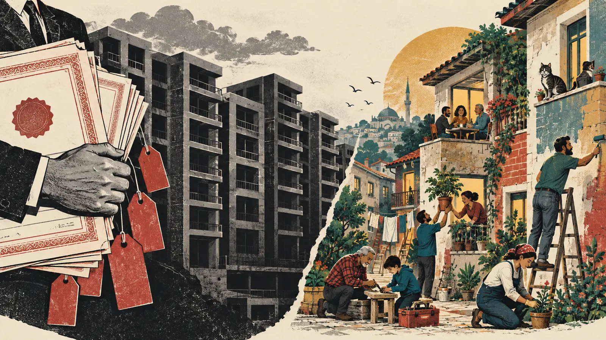
Proudhon’un “Mülkiyet hırsızlıktır” sözü çoğu zaman bağlamından koparılır. Hedef aldığı şey, kişinin yaşadığı küçük ev veya kullandığı araç değil; hukuken sahip olduğu fakat kullanmadığı bir varlık üzerinden başkasının emeğine ve ihtiyacına hükmetmesidir. Proudhon, mülkiyet ile zilyetlik ve kullanım arasında ayrım kurar.
Buradan çıkan sonuç “herkes aynı yurtta yaşayacak” değildir. Kropotkin de devasa ortak yatakhanelerin herkese uygun olmadığını, ailelerin ve arkadaş gruplarının ayrı yaşam alanlarına ihtiyaç duyduğunu belirtir. Ortaklaştırılması gereken mahrem hayat değil; arsa rantı, spekülasyon ve başkasını evsiz bırakabilen mülkiyet gücüdür.
Kropotkin, Ekmeğin Fethi kitabının “Konutlar” bölümünde bir evin değerinin yalnız onu finanse eden kişiden gelmediğini söyler. Yapıyı işçiler kurar; sokağı, altyapıyı, ulaşımı, okul ve parkları toplum yaratır; bir kenti değerli kılan geçmiş kuşakların birikmiş emeğidir.
Klasik ekonomi “piyasa hangi fiyatta dengeye gelir?” diye sorar. Kropotkin ise “her insanın sağlıklı bir konutta yaşaması için elimizde hangi emek, malzeme ve bilgi var?” sorusuyla başlar. Bu, konutu satın alma gücüne göre değil ihtiyaca göre planlayan bir ekonomidir.
Boş konut ile evsizlik aynı yerde bulunuyorsa sorun yalnız üretim eksikliği değildir. Toplumsal olarak yaratılan değer topluma geri dönmelidir.
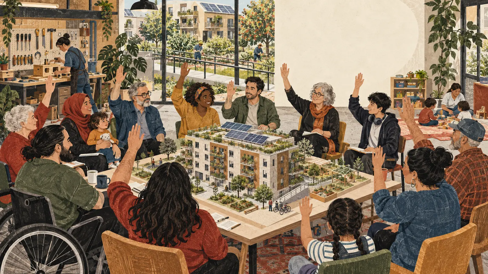
“Piyasa olmayacaksa her şeyi merkezî devlet mi dağıtacak?” sorusu haklıdır. Anarşist yanıt, konutun ne şirket yönetim kuruluna ne de uzak bir bürokrasiye teslim edilmesidir. Murray Bookchin’in özgürlükçü belediyeciliği, mahalle ve kent ölçeğinde yüz yüze halk meclislerini; bu meclislerin de konfederal bağlarla birleşmesini önerir.
Yetki mümkün olan en küçük ölçekte kalır; daha büyük yapı yalnız alt birimlerin tek başına çözemediği işi üstlenir. Delegeler geri çağrılabilir, görevleri sınırlı ve hesapları açıktır. Böylece “devlet mi, piyasa mı?” ikiliğinin dışına çıkarız: Doğrudan demokrasiyle yönetilen müşterekler.
Arsa kâr amacı gütmeyen bir topluluk yapısında kalıcı olarak tutulur; ev ömür boyu güvenli kullanım hakkına kavuşur.
Karar gücü yatırılan sermayeye göre değil, sakinlik ve üyelik temelinde eşit dağıtılır.
Aylık ödeme finansman, bakım, sigorta, enerji, rezerv ve dayanışma payından oluşur; kâr kirası eklenmez.
Sakinler gündelik yönetimde özgürdür; binanın yeniden piyasaya satılması için federasyon onayı da gerekir.
Borcu azalan projelerin katkısı yeni konut müştereklerinin başlangıç sermayesine dönüşür.
Evsizlik, gelir, kira yükü, engellilik, hane büyüklüğü ve acil korunma ihtiyacı açık ölçütlerle değerlendirilir.
Her hanenin mahrem evi korunur; ortak mutfak, atölye, bahçe ve çocuk alanı gönüllülükle kurulur.
Yalıtım, yenilenebilir enerji, su kullanımı, erişilebilirlik ve deprem güvenliği maliyetin merkezine alınır.
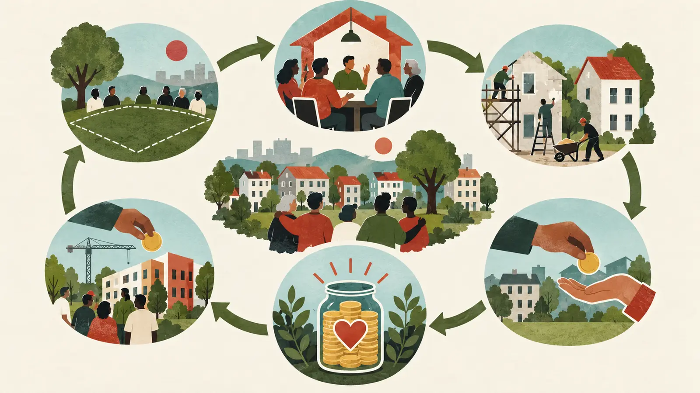
İlk kuruluş maliyeti tek bir kaynaktan değil, birbirini dengeleyen araçlardan karşılanır:
“Ortak olan sahipsiz kalır” sözü evrensel bir yasa değildir. Elinor Ostrom’un çalışmaları, ortak kaynakları başarıyla yöneten toplulukların bazı kurumsal özellikleri paylaştığını gösterir. Konuta uyarlandığında üyelik ve ortak alanlar açıkça tanımlanır; kurallar yerel koşullara uyar; sakinler kuralları değiştirebilir; bütçe ve bakım izlenebilir; uyuşmazlıklar hızlı ve adil biçimde çözülür.
Müşterek, kuralsızlık değildir; kuralların yukarıdan dayatılmak yerine kullanıcılar tarafından kurulmasıdır.
Hayır. İnşaat, bakım, enerji ve finansman maliyetleri ortakça karşılanır. Ortadan kaldırılan, gerçek bir hizmete karşılık gelmeyen ranttır.
Hayır. Oturduğu tek evden başka güvencesi olmayan insan hedef değildir. Öncelik boş stoklar, kurumsal spekülasyon ve çoklu yatırım mülkiyetidir.
Merkezî bir memur değil; açık ölçütler, yerel meclis, kura ve bağımsız itiraz mekanizmasının birleşimi.
Yozlaşabilir. Satış kilidi, açık muhasebe, görev rotasyonu, geri çağrılabilir temsilci ve federasyon denetimi bu yüzden gerekir.
Barınma güvencesi bireysel özgürlüğün temelidir. Müşterek düzen özel hayatı değil, özel hayatın maddi güvencesini ortaklaştırır.
Çerkezköy gibi hızla büyüyen ilçelerde dayanışma ağları kurmak; boş konut, riskli yapı ve kira yükü haritası çıkarmak; 20–40 hanelik pilot için sakinleri ve uzmanları bir araya getirmek.
Kamu arazisi için satış değil kullanım tahsisi istemek; boş veya yarım kalmış bir binayı güçlendirerek ilk pilotu başlatmak; kademeli aidat ve dayanışma fonu kurmak.
Kooperatifleri bölgesel federasyonda birleştirmek; döner fon, ortak bakım ekipleri, enerji kooperatifi ve deprem güçlendirme havuzu oluşturmak.
Anarşizmin konut çözümü tek cümleyle şudur: Toprak ve konut üzerindeki karar gücü, rant arayanlardan orada yaşayanlara geçmelidir.
Bu çözüm ne başıboşluk ne de herkesi aynı kalıba sokan merkezî planlamadır. Özel yaşamı koruyan; fakat toprağı, finansmanı ve büyük kararları müşterekleştiren bir düzendir. Evler yatırım paketleri değil yaşam alanlarıdır. Ödeme kâra değil maliyete, yönetim sermaye payına değil eşit söze dayanır.
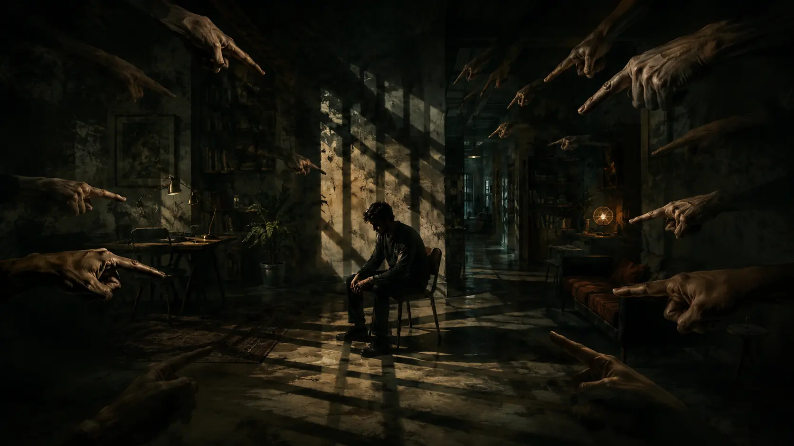
İktidarın gündelik hayattaki küçük yüzleri
Faşizm denildiğinde akla genellikle üniformalar, yürüyen ordular, meydanlarda bağıran liderler, yasaklar ve devlet şiddeti gelir. Oysa faşizm yalnızca devletin tepesinde ortaya çıkan siyasal bir rejim değildir. Bazen bir aile sofrasında, bir işyerinde, okul sırasında, arkadaş grubunda, siyasi örgütte veya sosyal medya tartışmasında filizlenir.
Başkalarının nasıl yaşayacağına karar verme arzusu, farklı olanı susturma isteği, itaat beklemek, eleştiriyi düşmanlık saymak ve gücü haklılığın ölçüsü olarak görmek… Bunların her biri iktidarın gündelik hayattaki küçük biçimleridir.
Mikro-faşizm kavramı, özellikle Gilles Deleuze ve Félix Guattari’nin düşüncelerinde belirginleşmiştir. Michel Foucault da onların çalışmalarını değerlendirirken insanın yalnızca dışarıdaki siyasal faşizmle değil, kendi davranışlarında taşıdığı “içimizdeki faşizm” ile de mücadele etmesi gerektiğine dikkat çeker.
Mikro-faşizm, tarihsel faşist rejimlerle aynı şey değildir. Her sert davranışı ya da her anlaşmazlığı “faşizm” olarak adlandırmak, kavramın tarihsel ağırlığını hafifletir. Burada anlatılmak istenen, büyük faşizmleri mümkün kılan küçük tahakküm alışkanlıklarıdır.
İktidarı yalnızca devlet, hükümet, polis veya ordu üzerinden düşünmek eksik kalır. İktidar, gündelik ilişkilerin içinde de üretilir. İnsanlar bazen kendilerine uygulanan baskıyı başkalarına aktarır.
İşyerinde yöneticisinden baskı gören kişi evinde ailesine hükmedebilir. Ailesinde susturulan çocuk okulda daha güçsüz bir arkadaşını ezebilir. Toplum tarafından aşağılanan biri, kendisinden farklı gördüğü başka bir gruba düşmanlık besleyebilir. Böylece tahakküm, yukarıdan aşağıya inen tek bir emir olmaktan çıkar; toplumun içinde dolaşan bir davranış biçimine dönüşür.
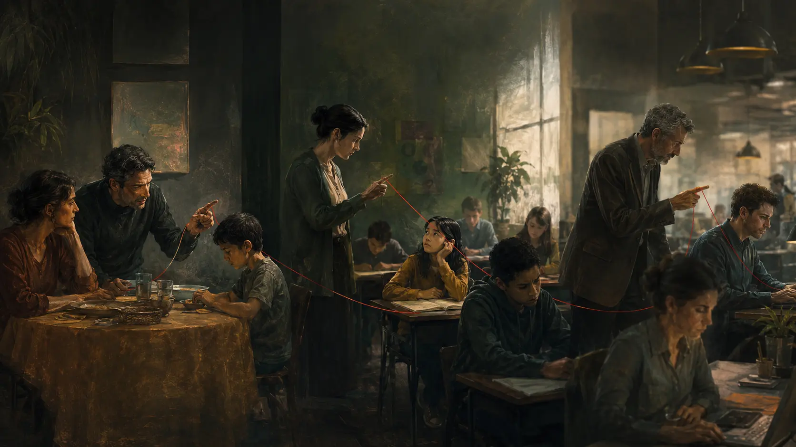
Mikro-faşizmin en rahatsız edici tarafı burada ortaya çıkar: İnsanlar yalnızca baskıya maruz kalmaz, kimi zaman baskıyı arzular ve yeniden üretirler.
Çünkü otorite insana sahte bir güvenlik duygusu verebilir. Belirsizlikle yaşamak zordur. Özgürlük, seçim yapmayı ve sonuçların sorumluluğunu üstlenmeyi gerektirir. Oysa güçlü bir lidere, değişmez bir geleneğe veya katı bir kurala teslim olmak kişiyi düşünme yükünden geçici olarak kurtarır.
“Sen düşünme, ben senin yerine karar veririm.”
Bu teklif, özgürlükten korkan insan için çekici olabilir. Ancak güvenlik karşılığında teslim edilen her küçük irade parçası, zamanla daha büyük bir itaate dönüşür. Mikro-faşizm sadece yönetme arzusunda değil, yönetilme arzusunda da yaşar.
Çocuğun sürekli susturulması, eşlerden birinin diğerinin yaşamına karar vermesi veya “senin iyiliğin için” denilerek kişinin iradesinin yok sayılması sevginin içine gizlenmiş bir tahakküm yaratabilir.
Eleştirinin sadakatsizlik, soru sormanın itaatsizlik ve hak talep etmenin nankörlük sayıldığı yerde kurum, insanın emeğiyle birlikte kişiliğini de denetlemek ister.
İnsanların birkaç kelime üzerinden yargılandığı dijital kalabalıklar yalnızca yanlış düşünceyi cezalandırmaz; düşünme ve yanılma cesaretini de yok eder.
Mikro-faşizm yalnızca sağcı, muhafazakâr veya açıkça otoriter yapılarda görülmez. Kendilerini özgürlükçü, devrimci veya ilerici olarak tanımlayan topluluklarda da ortaya çıkabilir.
Bir hareketin lideri eleştirilemiyorsa, farklı görüşler hemen ihanetle suçlanıyorsa, grup adına bireyin vicdanı susturuluyorsa ve özgürlük gelecekte kurulacak düzen adına sürekli erteleniyorsa orada mikro-faşizm büyümeye başlamış demektir.
Anarşist düşüncenin en güçlü uyarılarından biri budur: Geleceğin özgür toplumu, bugünkü ilişkilerimizin içinde filizlenmelidir.
Mikro-faşizm yalnızca başkalarına uyguladığımız baskı değildir. Kendi üzerimizde kurduğumuz acımasız denetimde de ortaya çıkar.
Bu cümleler, toplumun insanın zihnine yerleştirdiği küçük gardiyanların sesidir. Zamanla dışarıdaki otoriteye gerek kalmaz; kişi kendisini susturur, arzularından utanır ve başkalarının beklentilerine göre yaşamaya başlar.
Özgürleşmek bu nedenle yalnızca dışarıdaki efendilere karşı çıkmak değildir. İçimizde taşıdığımız efendiyi de fark etmektir.
Hayır. Birlikte yaşamın sınırları, ortak kararları ve sorumlulukları vardır. Başkasının özgürlüğünü koruyan bir sınır ile insanları yönetmek amacıyla konulan bir yasak aynı şey değildir.
Bir yapıda hesap verme yoksa, eleştiri cezalandırılıyorsa ve güç sürekli aynı ellerde toplanıyorsa orada tahakküm kök salmaya başlamıştır.
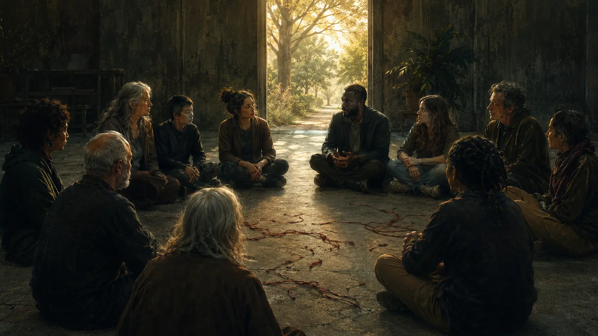
Mikro-faşizme karşı mücadele yalnızca büyük siyasal sloganlarla yürütülemez. Gündelik hayattaki davranışların da değişmesi gerekir. İnsan önce kendisine şu soruyu sormalıdır:
“Ben özgürlük isterken başkalarının özgürlüğüne ne kadar izin veriyorum?”
Dinlemek, gücü paylaşmak, kararları birlikte almak, gerektiğinde geri çekilmek ve yanılabileceğimizi kabul etmek bu mücadelenin başlangıcıdır.
İşyerinde dayanışma, ailede eşit söz hakkı, okulda sorgulayıcı eğitim, mahallede doğrudan katılım ve örgütlerde dönüşümlü sorumluluklar mikro-faşizme karşı somut uygulamalardır. Karar alma süreçleri açık olmalı, görevler kalıcı makamlara dönüşmemeli ve kimse bilgiyi kendisine ayrıcalık sağlayan bir araç olarak kullanmamalıdır.
Anarşist yaklaşım, iktidarın yalnızca el değiştirmesini yeterli görmez. Çünkü efendinin değişmesi, efendiliğin ortadan kalktığı anlamına gelmez. Esas mesele, hükmeden ile hükmedilen arasındaki ilişkinin kendisini dönüştürmektir.
Büyük faşizmler bir sabah ansızın gökten inmez. Önce küçük itaatler, küçük suskunluklar ve küçük nefretler birikir. İnsanlar farklı olanın dışlanmasına alışır. Gücün haklılık sayılmasına ses çıkarmaz. Başkasına yapılan haksızlığı kendisine dokunmadığı için önemsemez.
Bu nedenle özgürlük de küçük yerlerden başlamalıdır: Bir çocuğun sözünü kesmemekten, bir çalışanın itirazını dinlemekten, farklı düşünene düşmanlık duymamaktan ve sahip olduğumuz gücü paylaşmaktan…
Mikro-faşizme karşı mücadele, insanın kendisini sürekli temize çıkarması değil, kendi içindeki tahakküm eğilimleriyle yüzleşmesidir. Çünkü hiçbirimiz iktidar ilişkilerinin tamamen dışında değiliz.
Faşizm, gündelik hayatın küçük “evet”lerinde büyür.
Özgürlük ise haksızlığa karşı söylenen küçük ama kararlı “hayır”larla başlar.
Gilles Deleuze ve Félix Guattari’nin Anti-Oedipus ile A Thousand Plateaus çalışmalarındaki arzu, iktidar ve mikro-faşizm çözümlemeleri; Michel Foucault’nun Anti-Oedipus için yazdığı önsözde geliştirdiği gündelik faşizm uyarısı bu makalenin düşünsel zeminini oluşturur.
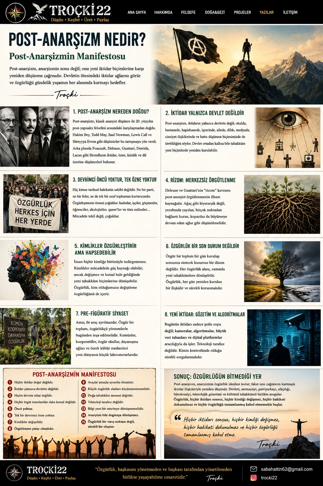
“Post-anarşizm” anarşizmin sona erdiğini söylemez. Buradaki “post”, anarşist düşüncenin kendi kavramlarını yeni iktidar biçimleri karşısında yeniden sorgulamasını ifade eder. Klasik anarşizmin devlet, sermaye ve kurumsallaşmış otorite eleştirisini korur; fakat iktidarın okulda, ailede, işyerinde, hastanede, hapishanede, dilde, kültürde, cinsiyet ilişkilerinde, kimliklerde ve bilgi üretiminde de yeniden kurulabileceğini vurgular.
Post-anarşizm tek bir düşünürün kapalı sistemi değildir. Hakim Bey, Todd May, Saul Newman, Lewis Call, Süreyyya Evren ve Duane Rousselle gibi isimlerin tartışmalarıyla gelişen bir düşünce alanıdır. Teorik arka planında Michel Foucault, Gilles Deleuze, Félix Guattari, Jacques Derrida ve Jacques Lacan’ın iktidar, özne, kimlik ve dil analizleri bulunur. Proudhon, Bakunin, Kropotkin, Stirner ve Emma Goldman’ın klasik anarşist mirası ise bu tartışmanın tarihsel zeminidir.
Post-anarşizmin en önemli katkılarından biri iktidar kavramını genişletmesidir. Devlet ortadan kalksa bile tahakküm otomatik olarak yok olmayabilir. Modern iktidar insanları sınıflandıran, normalleştiren, gözetleyen ve belirli davranış kalıplarına yönelten kurumlar, bilgiler ve gündelik ilişkiler aracılığıyla da işler. Bu nedenle devleti ortadan kaldırmak özgürlüğün başlangıcı olabilir; fakat özgürlüğün garantisi değildir.
İktidar yalnızca tek merkezde toplanmıyorsa direniş de yalnızca devlet iktidarını ele geçirmek veya ortadan kaldırmak biçiminde düşünülemez. İşyerinde, mahallede, okulda, kadın hareketlerinde, ekolojik mücadelelerde, dijital özgürlük hareketlerinde, kooperatiflerde ve yerel topluluklarda özgürleşme pratikleri ortaya çıkabilir. Devrim böylece yalnızca gelecekteki büyük bir gün değil, bugünün içinde kurulan özgürlük ilişkileri hâline gelir.
Saul Newman’ın tartışmalarında klasik anarşizmde bulunduğunu düşündüğü değişmez insan doğası varsayımları eleştirilir. Post-anarşist yaklaşım insanı tamamlanmış ve değişmez bir öz olarak değil, tarihsel ve toplumsal ilişkiler içinde sürekli oluşan bir özne olarak düşünmeye eğilimlidir. İnsan yalnızca “olan” değil, aynı zamanda sürekli “oluşan”dır.
Rizom kavramı merkezi olmayan örgütlenmeyi düşünmek için güçlü bir metafordur. Ağaç tek kök, gövde ve hiyerarşik dallar üzerinden büyür. Rizom ise birçok yönde ilerler; tek bir merkezi yoktur ve bir noktası koparıldığında başka yerlerden büyümeyi sürdürebilir. Post-anarşist örgütlenme de merkezsiz, yatay, çoğul, bağlantılı ve esnek ağlar olarak düşünülebilir.
Hiçbir parti, lider, filozof veya uzman toplum adına tarihsel hakikatin tek sahibi değildir. İnsanların yerine özgürleşmek mümkün değildir. Aynı şekilde özgürleşmenin tek bir toplumsal öznesi olduğu düşüncesi de sorgulanır. Sınıf önemlidir; fakat cinsiyet, ırkçılık, sömürgecilik, milliyetçilik, ekolojik yıkım, bürokrasi ve teknolojik gözetim gibi farklı tahakküm biçimleri kendi özgüllükleri içinde ele alınmalıdır.
Kimlikler mücadelede dayanışma ve güç kaynağı olabilir. Ancak bir kimlik değişmez ve kutsal bir öz hâline getirildiğinde yeni tahakküm biçimleri üretebilir. Post-anarşist özgürlük yalnızca kim olduğumuzu ifade etme hakkını değil, kim olduğumuzu değiştirebilme özgürlüğünü de savunur.
Hiçbir devrim tahakkümün bir daha geri dönmeyeceğini garanti edemez. Bugünün özgürlükçü kurumu yarının bürokrasisine, bugünün devrimcisi yarının yöneticisine dönüşebilir. Bu nedenle özgürlük tamamlanmış bir proje değil, sürekli korunması ve yeniden üretilmesi gereken toplumsal bir ilişkidir.
Amaç yeni bir egemenlik merkezi yaratmak değil, insanların kendi yaşamlarını doğrudan örgütleyebildikleri alanları genişletmektir. Kooperatifler, komünler, mahalle meclisleri, özgür eğitim girişimleri, dayanışma ekonomileri, topluluk bahçeleri ve özerk kültür merkezleri başka toplumsal ilişkilerin mümkün olduğunu gösteren deneyler olabilir. Özgür bir toplum otoriter yöntemlerle kurulamaz; amaç ile araç birbirinden ayrılamaz.
Yirmi birinci yüzyılda iktidarın araçları çeşitlenmiştir. Dijital gözetim, algoritmik yönetim, büyük veri tabanları, platform tekelleri, biyometrik sistemler ve yapay zekâ aracılığıyla karar verme mekanizmaları yeni sorular doğurur. Teknoloji tarafsız değildir; özgürleştirebildiği gibi gözetim, kontrol ve merkezileşmenin de aracı olabilir.
Post-anarşizm anarşizmin sonrasını ilan etmez. Anarşizmin en eski sorusunu çağımızın koşullarında yeniden sorar: İnsan, başkasını yönetmeden ve başkası tarafından yönetilmeden nasıl birlikte yaşayabilir? Hiçbir iktidarı sonsuz, hiçbir kimliği değişmez, hiçbir hakikati dokunulmaz ve hiçbir özgürlüğü tamamlanmış kabul etme.
Bu yazı; Hakim Bey’in Post-Anarchism Anarchy metni, Todd May’in post-yapısalcı anarşizm tartışmaları, Saul Newman’ın From Bakunin to Lacan ve post-anarşizm üzerine çalışmaları ile Duane Rousselle ve Süreyyya Evren’in derlediği Post-Anarchism: A Reader ekseninde hazırlanmıştır. Michel Foucault, Gilles Deleuze ve Félix Guattari’nin iktidar, özne ve rizom analizleri düşünsel arka planı oluşturur.
Batı felsefesinin en inatçı sorularından biri zihin ile beden arasındaki ilişkidir. Spinoza bu eski problemi kökten değiştirir ve insanı doğanın bütünlüğü içinde yeniden düşünür.
Descartes zihni düşünen töz, bedeni uzamlı töz olarak ayırmıştı. Spinoza’ya göre sorun, gerçekliği daha başlangıçta iki bağımsız töze bölmekten kaynaklanıyordu.
Spinoza’nın merkezinde tek töz anlayışı bulunur: Tanrı ya da Doğa — Deus sive Natura. İnsan doğanın karşısında değil, onun içindeki sonlu bir varoluş biçimidir.
Zihin ve beden iki bağımsız töz değildir. Aynı insanı iki farklı açıdan kavrarız: beden uzam altında, zihin düşünce altında. İkisi tek gerçekliğin farklı ifade biçimleridir.
Sevgi, nefret, korku, umut ve öfke doğaya aykırı kusurlar değildir. Bunları yargılamadan önce nedenlerini anlamak gerekir. Spinoza’da bilgi bu nedenle özgürleştirici bir güçtür.
Her varlık kendi varlığını sürdürmeye çabalar. İnsanda bu çaba yalnızca biyolojik hayatta kalmak değil, daha yeterli fikirler edinmek ve etkinlik gücünü artırmaktır.
İnsan eylemlerinin farkındadır fakat onları belirleyen nedenlerin çoğunu bilmez. Spinoza’nın özgürlüğü nedensiz seçim yapmak değildir: özgürlük, zorunluluğu ve bizi belirleyen nedenleri anlamaktır.
İnsan doğanın efendisi veya dışında duran bir varlık değildir. Zihnimiz, bedenimiz, düşüncelerimiz ve özgürlük arayışımız doğanın içindedir. Kendimizi daha iyi anladıkça bizi belirleyen ilişkileri de daha iyi kavrarız.
Zihin bedenden kaçamaz. Beden zihnin hapishanesi değildir. İkisi de aynı varoluşun iki ifadesidir.
Anarşizm çoğu zaman yanlış biçimde kaos, düzensizlik veya kuralsızlık ile özdeşleştirilir. Oysa anarşist düşüncenin tarihsel kaynaklarına bakıldığında karşımıza çok daha kapsamlı bir siyasal ve felsefi gelenek çıkar. Anarşizmin temel sorusu şudur: İnsanlar, kendilerinin üzerinde zorlayıcı ve ayrıcalıklı bir otorite olmadan, özgürce ve dayanışma içinde birlikte yaşayabilirler mi?
Anarşist düşünürlerin büyük bölümü bu soruya evet cevabını verir. Ancak bu cevap, toplumun hiçbir düzeninin olmayacağı anlamına gelmez. Tam tersine anarşizm; yukarıdan dayatılan düzen yerine insanların özgür birliktelikler, karşılıklı yardımlaşma, özyönetim ve gönüllü işbirliği yoluyla kendi toplumsal düzenlerini kurabileceklerini savunur.
Anarşizmin merkezinde tahakküm eleştirisi bulunur. Burada önemli bir ayrım vardır: bilgiye, uzmanlığa ya da koordinasyona duyulan ihtiyaç ile insanların itaat etmeye zorlandığı kurumsal iktidar aynı şey değildir. Bir doktorun tıbbi bilgisi veya bir mühendisin teknik uzmanlığı, toplum üzerinde kalıcı bir üstünlük kurma hakkı vermez.
Devlet, sermaye, bürokrasi, patriyarka veya başka bir kurum insanların yaşamları üzerinde kalıcı ve zorlayıcı bir üstünlük oluşturduğunda anarşist düşünce şu soruyu yöneltir: Bu iktidar neden gereklidir ve hangi hakla başkalarının yaşamını belirlemektedir?
Pierre-Joseph Proudhon modern anarşizmin gelişiminde önemli bir dönüm noktasıdır. Ünlü “Mülkiyet hırsızlıktır” sözü çoğu zaman bağlamından koparılarak yorumlanır. Eleştirisinin merkezinde, başkalarının emeği üzerinden ekonomik güç sağlayan mülkiyet ilişkileri bulunuyordu. Proudhon merkezi devlet yerine insanların karşılıklı anlaşmalarla oluşturduğu federatif yapılara önem verdi.
Mihail Bakunin'e göre sorun yalnızca devletin başında kimin bulunduğu değildir; asıl sorun, devletin kendisinin toplumdan ayrı bir iktidar merkezi oluşturmasıdır. Bir devrim adına bile bütün gücün küçük bir grubun elinde toplanmasının sonunda yeni bir yönetici sınıf yaratabileceğini düşünüyordu.
Coğrafyacı ve doğa bilimci Pyotr Kropotkin, doğayı yalnızca acımasız bir rekabet alanı olarak görmenin eksik olduğunu savundu. Hayvanlarda ve insan topluluklarında işbirliği ile karşılıklı yardımın yaşamın devamında önemli rol oynadığını vurguladı. Buradan güçlü bir toplumsal düşünce geliştirdi: Dayanışma insan doğasına yabancı değildir.
Emma Goldman, anarşizmin yalnızca ekonomik ve siyasal kurumlarla ilgilenmemesi gerektiğini gösterdi. Kadın özgürlüğü, ifade özgürlüğü, aşk, eğitim ve bireyin kendi yaşamı üzerindeki hakkı onun düşüncesinde önemli yer tutar. Çünkü bir devlet ortadan kalksa bile insanlar ailede, kültürde veya gündelik yaşamda birbirleri üzerinde tahakküm kurmaya devam edebilir.
Anarşizmde özgürlük “istediğimi yaparım” demek değildir. İnsanların özgürlükleri toplumsal ilişkiler içerisinde gerçekleşir. Başka insanların özgürlüğünü ortadan kaldıran bir ilişki gerçek anlamda özgürlük yaratmaz. Bu nedenle anarşist özgürlük anlayışı çoğunlukla dayanışma ve karşılıklılık kavramlarıyla birlikte düşünülür.
Tek bir anarşist model yoktur. Tarih boyunca mutualizmden anarşist komünizme, anarşosendikalizmden bireyci ve ekolojik anarşizme kadar farklı yaklaşımlar gelişmiştir. Ancak birçok yaklaşımda ortak ilkeler görülür:
Anarşistler tarih boyunca parlamenter temsile ciddi eleştiriler yöneltti. Buna karşılık doğrudan demokrasiye, yerel meclislere ve katılımcı karar mekanizmalarına yakın anarşist yaklaşımlar vardır. Temel ilke şudur: Bir kararın sonuçlarından etkilenen insanlar, o kararın alınmasına mümkün olduğunca doğrudan katılmalıdır.
Modern anarşist düşüncenin önemli gelişmelerinden biri ekolojik perspektiftir. Özellikle Murray Bookchin, ekolojik krizin yalnızca teknolojik bir problem olmadığını; toplumsal hiyerarşiler ve ekonomik sistemlerle ilişkili olduğunu savundu. Çevre sorunu yalnızca daha temiz teknoloji kullanmak değil, nasıl yaşayacağımızı ve nasıl üreteceğimizi yeniden düşünmektir.
Milyonlarca insanın yaşadığı karmaşık toplumlarda merkezi kurumlar olmadan sağlık, ulaşım, enerji, altyapı veya büyük ölçekli üretimin nasıl sürdürülebileceği ciddi bir sorudur. Anarşist düşüncenin bütün bu sorulara tarihsel olarak kanıtlanmış tek bir cevabı yoktur. Fakat anarşizmin değeri yalnızca tamamlanmış bir toplum modeli sunmasında değildir. Daha temel bir işlevi vardır: iktidarı sorgulamak.
Dijital teknolojiler, yapay zekâ, küresel ekonomi, iklim değişikliği ve devasa kentler insanlığın önüne yeni sorunlar koyuyor. Fakat eski sorular ortadan kalkmış değil: Güç kimde? Kararları kim veriyor? Üretilen zenginlik nasıl paylaşılıyor? Teknoloji insanı özgürleştiriyor mu, yoksa yeni denetim biçimleri mi yaratıyor? İnsan doğayla nasıl yaşayacak?
Anarşizm benim için yalnızca devlet karşıtlığı değildir. İnsanın başka bir insanın efendisi olmadığı; ekonomik gücün siyasal güce dönüşmediği; düşüncenin otorite tarafından sınırlandırılmadığı; doğanın yalnızca tüketilecek bir kaynak olarak görülmediği bir yaşam arayışıdır.
“Özgür bir toplum, özgürlüğü geleceğe erteleyerek değil; bugünden özgür ilişkiler kurmaya başlayarak yaratılabilir.”
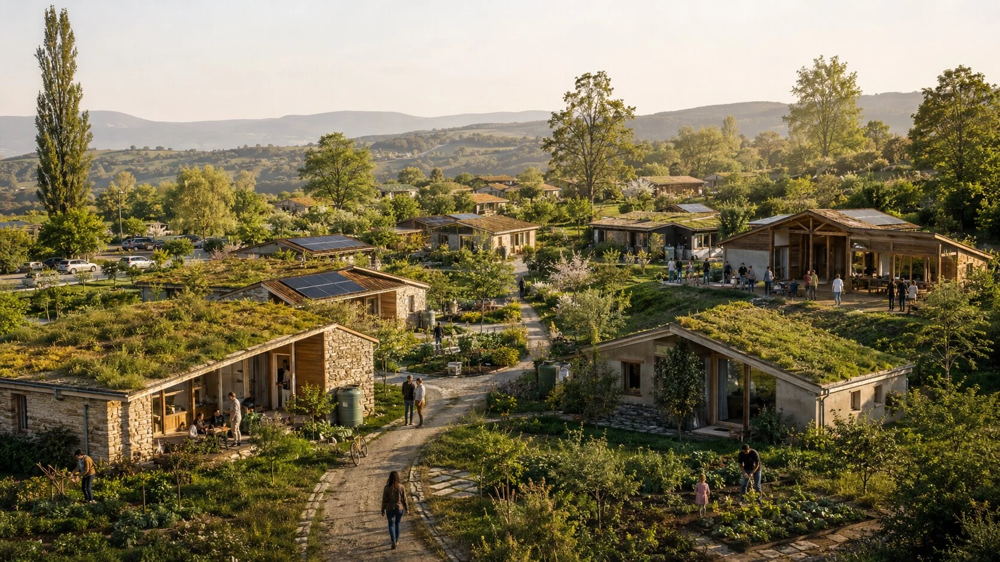
İnsan dünyaya geldiği andan itibaren güvenli bir yere ihtiyaç duyar. Barınma; beslenme, sağlık, eğitim ve özgürlük kadar temel bir yaşam koşuludur. Buna rağmen bugün bir evin anlamı, içinde yaşayan insanın huzurundan çok piyasa fiyatıyla ölçülüyor. Ev, sığınılan yer olmaktan çıkarılıp alınıp satılan, kiralanan, ipotek edilen ve boş tutulduğu hâlde bile değer kazanan bir mala dönüştürülüyor.
Bir tarafta kullanılmadan bekletilen konutlar, diğer tarafta kirasını ödeyemediği için evden çıkarılma korkusu yaşayan insanlar var. Yeni bir yaşam kurmak isteyen genç çiftler daha yolun başında uzun vadeli kredi borçlarına bağlanıyor. Yaşlılar gelirleri azaldığında yalnızca geçimlerini değil, evlerini de kaybetme korkusu taşıyor. Çocuklar, sürekli taşınmanın ve güvencesizliğin yarattığı sessiz kaygıyla büyüyor.
Bu tablo bize şunu söylüyor: Konut sorunu yalnızca bina sayısıyla açıklanamaz. Asıl sorun, toprağın ve konutun biriktirilebilir özel servet hâline gelmesi; bir insanın temel ihtiyacının başka bir insanın gelir kapısına dönüşmesidir. Anarşist yaklaşım tam da bu noktada devreye girer: Ev bir yatırım aracı değil, yaşama hakkının maddi güvencesidir.
Kapitalist konut düzeninde binanın kullanım değeriyle piyasa değeri birbirinden kopar. Bir konut yıllarca boş tutulabilir; çünkü sahibi onun içindeki yaşamla değil, gelecekte getireceği kazançla ilgilenir. Aynı sokakta bir aile barınacak yer ararken boş bir evin kapısının kilitli kalabilmesi, teknik bir yetersizliğin değil toplumsal bir tercihin sonucudur.
Anarşizm kişisel yaşam alanını ortadan kaldırmayı değil, barınma ihtiyacı üzerindeki tahakkümü sona erdirmeyi savunur. İnsanların odaları, eşyaları, mahremiyetleri ve aile yaşamları korunur. Ortadan kaldırılan şey; oturulmayan evlerden kira geliri elde etmek, konutu spekülasyon amacıyla biriktirmek ve bir başkasını sokağa atabilme gücüdür.
Bu nedenle projenin ilk dönüşümü hukuki olmaktan önce ahlakidir: Toprak ve ev, başkalarının yaşamını denetleme aracına dönüşemez. Toplumun ortak emeğiyle kurulan bir yerleşimde hiçbir kişi, şirket ya da banka barınma hakkının üzerinde ayrıcalıklı bir yetkiye sahip olamaz.
Önerdiğimiz model, insanları birbirinin aynısı yüksek apartman bloklarına sıkıştıran bir toplu konut anlayışı değildir. Her hane için yaklaşık 300 metrekarelik bir kullanım parseli ayrılır. Bu alan özel mülk olarak satılmaz; evle birlikte hanenin güvenli kullanımına verilir. Parselin bir bölümünde tek katlı ev, kalan bölümünde bahçe, gölgeli oturma alanı, küçük üretim bölümü ve doğrudan açık havaya çıkan yaşam alanı bulunur.
Üç yüz metrekare gösterişli bir mülk üretmek için değil; insana ışık, hava, sessizlik ve toprakla temas sağlayabilmek için seçilmiş ölçülü bir alandır. Evler birbirinin duvarına yaslanmaz. Mahremiyet yüksek beton duvarlarla değil; bitkisel sınırlar, ağaçlar, doğal çitler ve doğru yerleşimle sağlanır. Böylece kişisel alan korunurken mahalle, birbirinden kopuk adacıklara dönüşmez.
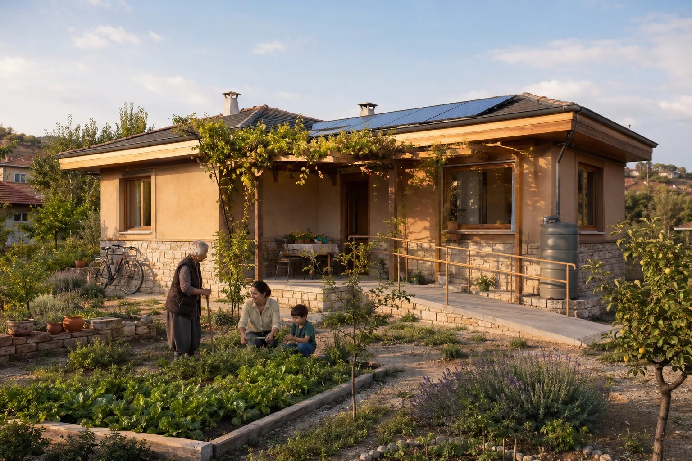
Eşitlik herkese aynı büyüklükte evi vermek değildir; herkesin gerçek ihtiyacını karşılamaktır. Bu nedenle evler 1+1, 2+1, 3+1 ve 4+1 seçenekleriyle modüler tasarlanır. Oda sayısı gelir düzeyine, mesleğe ya da toplumsal statüye göre değil, hanede yaşayan kişi sayısına ve özel gereksinimlere göre belirlenir.
| Konut tipi | Hane | İhtiyaç ilkesi |
|---|---|---|
| 1+1 | 1–2 kişi | Tek yaşayanlar, çiftler ve bakım desteği gerektiren bireyler |
| 2+1 | 3 kişi | Küçük aileler; erişilebilir plan seçeneği |
| 3+1 | 4–5 kişi | Çocuklu veya çok kuşaklı haneler |
| 4+1 | Daha kalabalık hane | Gerçek ihtiyaç ya da özel mekân gereksinimi bulunanlar |
Engelli bireyler, yaşlılar ya da sürekli bakım gereksinimi bulunan kişiler için oda sayısından bağımsız uyarlamalar yapılır. Merdivensiz giriş, geniş kapılar, kaymaz yüzeyler, erişilebilir banyo ve kolay değiştirilebilir iç düzen sonradan eklenen lüksler değil, tasarımın başlangıç koşullarıdır.
Evler modüler olduğu için hane büyüdüğünde teknik koşullar uygunsa yeni bir oda eklenebilir. Hane küçüldüğünde kimse zorla taşınmaz; ancak kullanılmayan büyük konutların gönüllü değişimini kolaylaştıran dayanışmacı bir sistem kurulur.
Doğal malzeme kullanmak, güvenlikten vazgeçmek anlamına gelmez. Taş, ahşap, sıkıştırılmış toprak, kerpiç, kireç esaslı sıva ve geri dönüştürülebilir malzemeler; zemin etüdü, deprem hesabı, yangın güvenliği, su yalıtımı ve taşıyıcı sistem mühendisliğiyle birlikte ele alınır. Geleneksel yapı bilgisiyle çağdaş mühendislik birbirinin rakibi değil, tamamlayıcısıdır.
Malzemenin mümkün olduğunca yakın çevreden sağlanması taşıma maliyetini ve ekolojik zararı azaltır. Zararlı kimyasallardan kaçınılır; iyi ısı yalıtımı sayesinde yazın serin, kışın sıcak kalan evler yapılır. Dayanıklı bir yapıyı uzun yıllar korumak, sık sık yıkıp yeniden yapmaktan daha ekolojik ve daha ekonomiktir.
Çatılar güneş enerjisine uygun tasarlanır. Bir evin fazla ürettiği enerji, ortak ağ üzerinden başka bir evin ihtiyacını karşılayabilir. Yağmur suyu depolanır; uygun evsel kullanımlarda değerlendirilir. Gri su sistemleri, su tasarruflu armatürler ve kolay onarılabilir tesisatlar bütün yerleşimin standartları arasındadır.
Elektrik, su, iletişim, atık su ve bakım hatları evlerden önce planlanır. Böylece sonradan sürekli kazılan, pahalı ve düzensiz müdahaleler gerektiren bir altyapı oluşmaz. Kaynak kullanımı açıkça izlenir; amaç insanları cezalandırmak değil, ortak varlıkları bilinçli ve adil biçimde korumaktır.
Bu modelde ev geçici bir barınak değildir. Kişi ya da hane, konutu gerçekten kullandığı sürece orada ömür boyu güven içinde yaşayabilir. Kimse siyasi düşüncesi, ekonomik durumu, yaşam biçimi, kökeni ya da kimliği nedeniyle evinden çıkarılamaz. Güvence, bir ev sahibinin insafına ya da bankaya borçlu olmaya dayanmaz; topluluğun açık ilkeleriyle korunur.
Konut satılamaz, kiraya verilemez, ipotek edilemez ve spekülasyon amacıyla boş tutulamaz. Bir hane başka yere taşındığında ev ortak konut havuzuna döner; yeniden ihtiyaca göre tahsis edilir. Böylece kullanım hakkı kişiyi korur, fakat konutu kuşaklar boyunca biriktirilen servete dönüştürmez.
Aynı evde yaşamayı sürdüren eşin, çocukların ya da diğer aile bireylerinin hakkı korunur. Ölüm hâlinde içeride yaşayanlar kapı önüne konmaz; ancak ev, orada yaşamayan bir mirasçının gelir kaynağı da olamaz. Ayrılık ya da boşanma durumunda taraflardan hiçbiri barınmasız bırakılmaz.
Projede ev sahibi, patron, şirket yöneticisi ya da kalıcı konut idaresi bulunmaz. Yerleşimle ilgili kararlar, doğrudan orada yaşayanların katıldığı konut meclislerinde alınır. Meclisin görevi insanların özel hayatını düzenlemek değil; yalnızca ortak konut işlerini açık, geri çağrılabilir ve denetlenebilir biçimde yürütmektir.
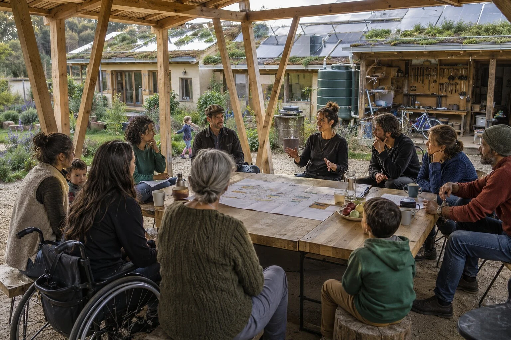
Meclis; yeni konut ihtiyacını belirler, tahsis ölçütlerini açıklar, inşaat ve bakım bütçesini denetler, enerji-su altyapısını planlar, erişilebilirlik düzenlemelerini kararlaştırır ve kullanılmayan evlerin yeniden tahsisini yürütür. Günlük teknik işler için çalışma grupları kurulur; görevler dönüşümlüdür ve seçilen temsilciler her an geri çağrılabilir.
Kararlar mümkün olduğunca uzlaşmayla alınır. Uzlaşma sağlanamadığında daha önce birlikte belirlenen açık yöntemler kullanılır. Bir anlaşmazlıkta ilk yol cezalandırma değil, arabuluculuk ve çözüm arayışıdır. Buna karşılık şiddet, tehdit, ayrımcılık ve başkasının yaşam alanına sürekli müdahale “özgürlük” bahanesiyle görmezden gelinmez.
Evlerin yapımı kâr amacı güden büyük inşaat şirketlerine teslim edilmez. Süreç; mimarlar, mühendisler, ustalar, teknisyenler ve gelecekte o evlerde yaşayacak insanların katıldığı kâr amacı gütmeyen bir konut kooperatifi tarafından yürütülür. Katılım, herkesin fiziksel olarak şantiyede çalışmaya zorlanması demek değildir. İnsanlar bilgi, beceri, zaman ve olanaklarına göre katkıda bulunur; katkı sunamayacak durumda olanların barınma hakkı ortadan kalkmaz.
İnşaatta çalışan herkes emeğinin karşılığını alır. Anarşist dayanışma ücretsiz emek sömürüsü değildir. Ortadan kaldırılan; emek harcamadan arsa, kredi, ihale ya da aracılık üzerinden aşırı kâr elde eden düzendir. Arazi, proje, mühendislik, malzeme, işçilik, altyapı ve bakım giderleri herkesin görebileceği biçimde yayımlanır.
Finansman kişisel banka kredilerine ve yüksek faize dayanamaz. Başlangıç kaynakları; gelire göre kooperatif katkıları, dayanışma fonları, faizsiz toplumsal borçlanma, gönüllü bağışlar, atıl arazilerin tahsisi, ortak malzeme üretimi, toplu satın alma ve boş yapıların dönüştürülmesiyle oluşturulur.
Geliri yüksek olan daha fazla, geliri düşük olan daha az katkıda bulunur. Maddi katkı yapamamak konut hakkını ortadan kaldırmaz. Fon fazlası kişilere kâr olarak dağıtılmaz; yeni evlerin yapımına, mevcut evlerin bakımına ve ortak altyapının güçlendirilmesine aktarılır. Konutlar satılmadığı için spekülatif fiyat artışı da oluşmaz.
Bu model bir gecede kurulacak soyut bir ütopya değil; küçük bir pilot yerleşimden başlayarak sınanabilecek somut bir programdır. Her aşama açık, denetlenebilir ve geri bildirimle düzeltilebilir olmalıdır.
Anarşizmin konut sorununa getirdiği çözüm yalnızca daha fazla bina yapmak değildir. Asıl amaç, konutu insan üzerinde egemenlik kuran bir ekonomik araç olmaktan çıkarmaktır. Yeni evlenen bir çift hayatına otuz yıllık borçla başlamamalı; yaşlı bir insan geliri azaldığında evini kaybetmemeli; çocuklar tahliye korkusuyla büyümemelidir.
Bu projede her hane yaklaşık 300 metrekarelik kullanım alanı içinde, ihtiyacına uygun, tek katlı, erişilebilir ve doğal malzemelerle yapılmış bir evde yaşar. Konut satılmaz, kiralanmaz ve sermayeye dönüştürülmez. Kullanıldığı sürece güvence altındadır; kullanılmadığında yeniden ihtiyacı olana verilir.
İnsanlığın herkese yetecek kadar toprağı, yapı bilgisi, malzemesi ve emeği vardır. Eksik olan kaynak değil; kaynakların bir azınlığın ayrıcalığı yerine ortak yaşamın hizmetine verilmesidir. Özgür bir toplum, insanın geceleri başını korkusuzca koyabileceği bir yerle başlar.
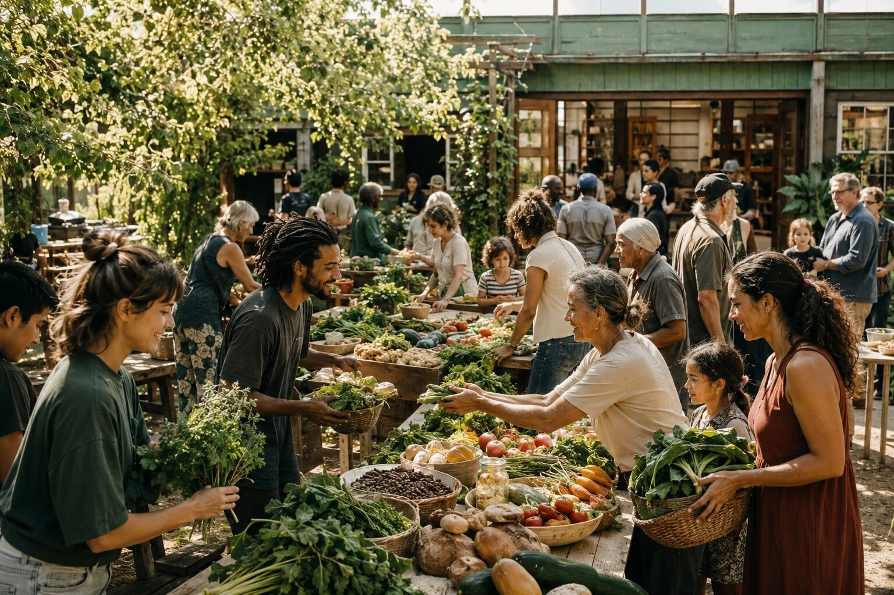
Bir toplumun özgür olup olmadığını yalnızca anayasasına, seçimlerine ya da meydanlarda söylenen sözlere bakarak anlayamayız. Asıl ölçü daha sadedir: O toplumda bir çocuk sabah okula aç gidiyor mu? Yaşlı bir insan öğün atlamak zorunda kalıyor mu? Bir anne, kendi tabağından eksiltip çocuğuna mı veriyor? Bir işçi akşam eve döndüğünde sofraya ne koyacağını düşünürken korkuyor mu?
Açlık yalnızca midenin boş kalması değildir. Dikkati dağıtır, öğrenmeyi güçleştirir, bedeni zayıflatır ve insanın kendine duyduğu saygıyı yaralar. Çocuk açısından açlık, hiçbir sorumluluğu olmadığı bir ekonomik düzenin cezasını taşımaktır. Çocuğa “ailen yoksul olduğu için daha az yiyeceksin” diyen bir toplum eşitlikten söz edemez.
Üstelik sorun her zaman mutlak gıda yokluğu değildir. Tarla üretir, depolar dolar, market rafları çeşitlenir; buna rağmen satın alma gücü olmayan insan yiyeceğe ulaşamaz. Yenilebilir ürünler fiyatı düşürmemek için imha edilirken başka bir evde tencere kaynamaz. Böyle bir düzende açlık, doğanın kaçınılmaz hükmü değil; erişimi paraya ve mülkiyete bağlayan toplumsal tercihin sonucudur.
Kapitalist gıda sistemi ürünü önce insanın ihtiyacı olarak değil, satılabilir mal olarak görür. Tohumdan toprağa, sudan depoya, ulaşımdan market rafına kadar her aşama kâr baskısına açılır. Üretici çoğu zaman emeğinin karşılığını alamaz; tüketici ise aynı ürünü pahalıya satın alır. Aradaki kazanç zinciri büyürken hem çiftçi hem kentli yoksullaşır.
Bu yapı açlığı kişisel başarısızlık gibi gösterir: “Daha çok çalışsaydı aç kalmazdı.” Oysa çocuk çalışmak zorunda değildir; engelli, hasta veya yaşlı biri üretkenlik sınavına sokulamaz. İnsan yaşam hakkını satın almak için önce piyasaya yararlı olduğunu kanıtlamak zorunda bırakılamaz. Beslenme, bir ücretin ödülü değil, insan olmanın koşuludur.
Anarşist yaklaşım, gıda sorununu yalnızca daha çok üretim meselesi saymaz. Kim üretiyor, toprağı kim denetliyor, ürün nereye gidiyor, kararı kim veriyor ve bakım emeğini kim üstleniyor sorularını birlikte sorar. Amaç merkezi bir otoritenin herkese aynı paketi dağıtması değil; üreticilerle mahallelerin ihtiyaç temelinde, doğrudan ve federatif biçimde örgütlenmesidir.
Pierre-Joseph Proudhon’un mülkiyet eleştirisi, toprağın ve üretim araçlarının sırf sahiplik unvanı sayesinde emeksiz gelir ve başkaları üzerinde güç üretmesine yönelir. Onun mülkiyet ile fiilî kullanım arasında kurduğu ayrım, beslenme alanında önemli bir sonuç doğurur: Toprağı işleyen, fırını çalıştıran ve ürünü taşıyan insanlar üretimin gerçek özneleridir; tohum, depo ya da arazi yalnızca kira ve tekel geliri yaratmak için tutulamaz.
Proudhoncu karşılıklılık, özellikle bugünden özgür topluma geçişte üretici kooperatifleri, faizsiz dayanışma fonları, ortak araç havuzları ve aracısız değişim ağları için güçlü bir zemin sunar. Ancak bu projede çocukların ve çalışamayacak durumda olanların beslenmesi hiçbir karşılık şartına bağlanmaz. Karşılıklılık, “yalnızca verdiğin kadar alırsın” hesabı değil; herkesin yapabildiği ölçüde katkı sunduğu, ihtiyacı ölçüsünde güvence gördüğü toplumsal bağlılıktır.
Bakunin için yalnızca kâğıt üzerindeki haklar yetmez; özgürlüğün gerçek olabilmesi için insanların yaşama, eğitim ve gelişme araçlarına eşit başlangıçla erişmesi gerekir. 1866 tarihli Devrimci İlmihal metninde her kız ve erkek çocuğun yetişkinliğe kadar beslenme, bakım, barınma ve eğitiminin toplum tarafından güvence altına alınmasını savunur. Bu yaklaşım okul yemeğini hayırseverlikten çıkarır: Çocuğun tabağı, toplumun ortak sorumluluğudur.
Bakunin’in eşitlik anlayışı tek biçimlilik değildir. Alerjisi olan, çölyakla yaşayan, diyabet takibi gereken, engelli veya farklı duyusal ihtiyaçları bulunan çocukların aynı yemeğe zorlanması eşitlik sayılmaz. Gerçek eşitlik, herkesin kendi sağlık ve gelişim ihtiyacına uygun güvenli besine ulaşmasıdır.
Peter Kropotkin, Ekmeğin Fethinde toplumun ilk görevinin herkesin refahını güvenceye almak olduğunu savunur. “Önce üret, sonra belki pay alırsın” mantığını tersine çevirir: İnsanların temel ihtiyaçları güvence altına alındığında özgür ve yaratıcı çalışma mümkün olur. Ekmek burada yalnızca un ve sudan yapılmış bir yiyecek değil; yaşamın bütün maddi koşullarının simgesidir.
Karşılıklı Yardımlaşma ise dayanışmayı iyi insanların ara sıra gösterdiği merhamet olarak değil, canlıların ve insan topluluklarının sürekliliğini sağlayan güçlü bir toplumsal eğilim olarak ele alır. Ortak ambar, imece, kooperatif, mahalle mutfağı ve okul sofrası bu nedenle insan doğasına aykırı yapay kurumlar değildir; rekabet kadar eski yardımlaşma pratiklerinin bilinçli biçimde örgütlenmesidir.
Kropotkin’in tarım ile zanaat ve sanayiyi birbirine yaklaştıran yerel üretim düşüncesi de bu projenin ekolojik omurgasını oluşturur. Kent yalnızca tüketen, kır yalnızca üreten iki ayrı dünya olmayacaktır. Kent bahçeleri, yakın çevre kooperatifleri, küçük işleme atölyeleri ve mahalle mutfakları birbirini tamamlayacaktır.
Errico Malatesta, özgür işbirliğinin kendiliğinden gelişmesini beklemekle yetinmez; insanların ihtiyaçlarını karşılamak için bilinçli örgütlenmeye ihtiyaç olduğunu vurgular. Anarşizm plansızlık değildir. Binlerce çocuğa her gün güvenli yemek ulaştırmak; üretim takvimi, soğuk zincir, hijyen, vardiya, stok ve ulaşım planı gerektirir.
Fark, bu düzenin yukarıdan emir veren kalıcı bir bürokrasiye dönüşmemesidir. Görevler açıkça tanımlanır, sorumlular seçilir, yetkileri sınırlanır, kayıtlar topluluğa açılır ve temsilciler geri çağrılabilir. Uzmanlık saygı görür; fakat uzman kişi dokunulmaz yönetici olmaz.
Emma Goldman ve Francisco Ferrer’in özgür eğitim anlayışında çocuk pasif bir kap değildir. Okul, itaat üretmek yerine merakı, kişiliği ve birlikte yaşamayı geliştirmelidir. Bu nedenle okul yemeği de sessizce sıraya girip verilen tabağı bitirme zorunluluğu biçiminde örgütlenemez. Çocuklar menü değerlendirmesine, bahçe çalışmalarına, israfı azaltmaya ve sofra kültürüne yaşlarına uygun biçimde katılır.
Katılım çocuk emeğini sömürmek değildir. Hiçbir çocuk mutfak işçisi yapılmaz; ancak tohumun nasıl filizlendiğini, ekmeğin hangi emeklerden geçtiğini ve ortak sofranın nasıl kurulduğunu deneyimleyebilir. Beslenme eğitimi reklamların ve yasakların diliyle değil, doğrudan yaşamla öğrenilir.
Murray Bookchin’in toplumsal ekolojisi, doğaya hükmetme arzusuyla insanın insana hükmetmesi arasında bağ kurar. Endüstriyel monokültür, zehirli kimyasal bağımlılığı ve uzak tedarik zincirleri yalnızca teknik tercihler değildir; merkezileşmiş iktidarın gıda alanındaki biçimleridir. Çözüm ise mahalle ve kent meclislerinin doğrudan katılımıyla, ekolojik sınırlar içinde karar vermesi ve bu meclislerin geri çağrılabilir delegeler aracılığıyla federasyon kurmasıdır.
Özgür Sofralar Ağı; tarlayı, üreticiyi, depoyu, mutfağı, okulu ve mahalleyi tek merkezden yönetmeden birbirine bağlayan federatif bir sistemdir. Her birim kendi günlük kararlarını alır; ortak ulaşım, ürün fazlası, afet stoku ve teknik standartlar gibi bölgesel konular delegeler aracılığıyla koordine edilir.
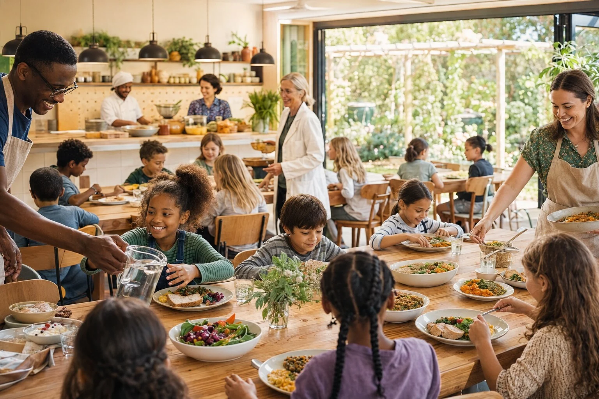
Projenin tartışmasız önceliği çocuklardır. Çünkü çocuklukta yetersiz beslenmenin bedeli yalnızca o gün hissedilen açlık değildir; bedensel gelişimi, dikkat süresini, öğrenme kapasitesini ve gelecek sağlığını etkileyebilir. Dünya Gıda Programı, UNESCO, UNICEF ve Dünya Sağlık Örgütü de güvenli ve besleyici okul öğünlerinin öğrenme, okula devam ve eşitlik bakımından önemini vurgular.
Ancak yalnızca “yoksul çocuklara yemek” modeli damgalama yaratabilir. Kimin yoksul olduğuna karar veren formlar, kartlar ve listeler çocukları birbirinden ayırır. Özgür Sofralar Ağı’nda program evrenseldir: Okuldaki her çocuk yararlanır. Varlıklı ailenin çocuğu da aynı sofraya oturur; yoksulluk görünür bir işarete dönüşmez.
| Zaman | Sunulan güvence | Uygulama ilkesi |
|---|---|---|
| Sabah | Dengeli kahvaltı | Tam tahıl, yumurta/peynir veya uygun bitkisel protein, sebze-meyve ve su; yerel alışkanlıklara göre çeşitlendirilir. |
| Öğle | Sıcak ana öğün | Mevsim sebzesi, bakliyat ve dönüşümlü protein kaynakları; yaş grubuna göre uzmanlarca planlanır. |
| Ara öğün | Meyve ve tamamlayıcı besin | Yoğurt ya da uygun alternatif; alerjen güvenliği gözetilir, şekerli içecek ve reklam ürünü bulunmaz. |
| Gün boyu | Temiz içme suyu | Ücretsiz, kolay erişilebilir ve düzenli analiz edilen su noktaları. |
| Tatil/hafta sonu | Mahalle mutfağı erişimi | Okul kapandığında hak kapanmaz; çocuk ve ailesi yakın mahalle sofrasından yararlanır. |
Alerji, çölyak, diyabet, metabolik hastalıklar, duyusal hassasiyetler, inanç ve kültürel tercihler kayıt altına alınır; ancak bu bilgiler mahrem tutulur. Güvenli alternatif yemek “özel tabak” damgasıyla teşhir edilmez. Vejetaryen ve dengeli bitkisel seçenek her gün erişilebilir olur. Çocuk yemeği bitirmeye zorlanmaz; açlıkla disiplin kurulmadığı gibi yemekle ödül-ceza ilişkisi de kurulmaz.
Okul içinde çocukları hedefleyen marka reklamlarına, enerji içeceklerine ve besleyici öğünün yerini alan aşırı şekerli ürünlere yer verilmez. Amaç yasakçı bir korku kültürü kurmak değil; sağlıklı seçeneği lezzetli, çeşitli ve ulaşılabilir kılmaktır. Çocuklar okul bahçesinde üretimi gözlemler, aşçılarla söyleşir ve yaşlarına uygun atölyelerde gıdanın yolculuğunu öğrenir.
Yemeğin ücretsiz olması, üretimin maliyetsiz ya da görünmez olması demek değildir. Toprağı işleyen, ekmek pişiren, kamyon kullanan, bulaşık yıkayan ve menü hazırlayan insanların emeği vardır. Ücretsiz olan, sofraya oturan kişinin o anda para ödemek zorunda bırakılmamasıdır. Maliyet bireyin açlığına yüklenmez; topluluğun ortak düzeni içinde karşılanır.
Olgunlaşmış anarşist-komünal düzende üreticinin barınma, sağlık, eğitim, ulaşım ve beslenme ihtiyaçları da ortak ağ tarafından güvenceye alınır. Böylece ürününü satamazsa aç kalan çiftçi ile yiyeceği satın alamazsa aç kalan kentli arasındaki karşıtlık ortadan kalkar. Geçiş döneminde ise kooperatif gelirleri, dayanışma fonları, ortak üretim, atıl kamu kaynaklarının topluluk kullanımına devri, faizsiz karşılıklı kredi ve mevcut okul beslenme bütçelerinin demokratik denetimi birlikte kullanılabilir.
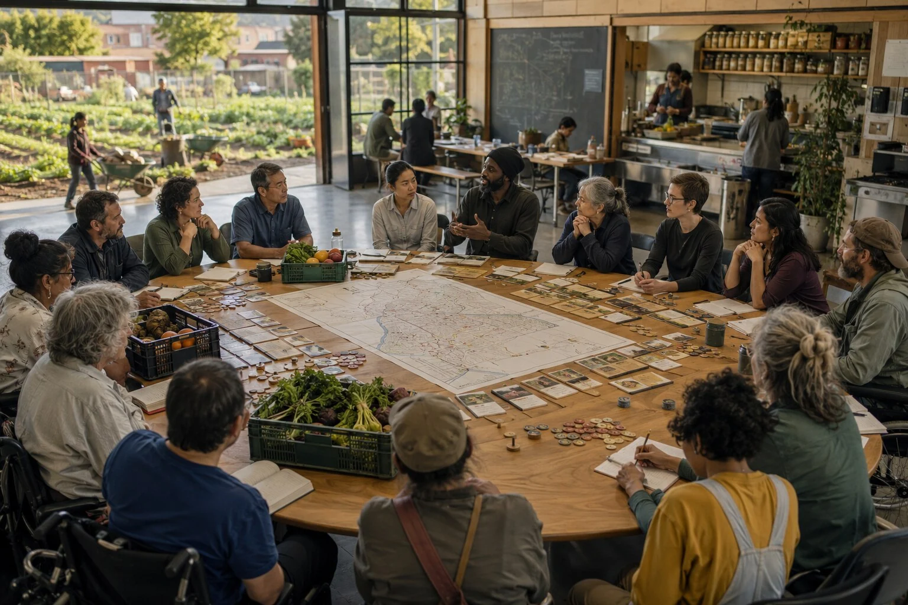
Gıda sisteminin sahibi bir şirket, belediye başkanı, parti örgütü ya da değiştirilemez uzman kurulu değildir. Mahalle gıda meclisinde üreticiler, mutfak emekçileri, öğrenciler, veliler, öğretmenler, sağlık ve gıda uzmanları, yaşlılar ve engelli bireyler temsil edilir. Öğrenci katılımı yaşa uygun yöntemlerle sağlanır; çocuklardan yetişkin sorumluluğu taşımaları beklenmez.
Meclis, haftalık menünün her ayrıntısına keyfî biçimde karışmaz. Beslenme ve güvenlik ekibi bilimsel sınırları açıklar; aşçılar uygulanabilirliği, üreticiler mevsim koşullarını, çocuklar ise tat ve kabul edilebilirliği bildirir. Karar, uzmanlıkla yaşam deneyiminin birlikte çalışmasıyla oluşur.
Başka mahallelerle ilişkiler federasyon yoluyla kurulur. Delegeler belirli görev ve süre için seçilir, bağlayıcı talimatla gider, aldıkları kararı taban meclisine getirir ve istenildiğinde geri çağrılır. Federasyon koordinasyon sağlar; mahallelerin üzerinde yeni bir devlet gibi yükselmez.
Otorite eleştirisi, hijyen kurallarını reddetmek anlamına gelmez. Güvenli su, uygun sıcaklık, temiz yüzey, haşere kontrolü, alerjen ayrımı, izlenebilirlik ve düzenli laboratuvar analizi vazgeçilmezdir. Fark şudur: Denetim yalnızca cezalandıran dış memura bırakılmaz; mutfak çalışanları ve kullanıcılar güvenlik sisteminin bilgili ortakları olur.
Diyetisyen, hekim ve gıda mühendisi bilgisi ayrıcalık değil ortak kaynak sayılır. Uzman raporları anlaşılır dille yayımlanır. Bir hata saklanmaz; hızlıca duyurulur, ürün geri çekilir, zarar görenlere destek sağlanır ve nedenleri birlikte giderilir. Şeffaflık, suçlu avına değil tekrarı önlemeye hizmet eder.
Hiç kimsenin aç kalmaması hedefi, toprağı daha hızlı sömürmek anlamına gelemez. Üretim; su varlığı, toprak sağlığı, iklim, biyolojik çeşitlilik ve gelecek kuşakların hakkı gözetilerek planlanır. Ürün çeşitliliği artırılır, tohumlar ortak miras olarak korunur, yerel ve dayanıklı çeşitler desteklenir. Zararlı kimyasal bağımlılığı azaltılır; kompost ve döngüsel üretim geliştirilir.
Mevsim dışı ürünü uzak kıtalardan taşımak yerine mevsime uygun menüler kurulur. Bu, sofrayı yoksullaştırmaz; yerel mutfak bilgisini ve çeşitliliği canlandırır. Hayvansal ürünlerin çevresel etkisi dikkate alınır, dengeli bitkisel seçenekler çoğaltılır; fakat insanların kültürel tercihleri buyurganlıkla silinmez. Dönüşüm eğitim, erişilebilir seçenek ve ortak karar yoluyla ilerler.
1936 İspanya Devrimi sırasında özellikle Aragon ve Katalonya’daki anarşist kolektifler, savaşın ağır koşullarına rağmen üretim ve dağıtımı işçi-köylü örgütleri eliyle yürütmeye çalıştı. Augustin Souchy ve Gaston Leval’in aktardığı örneklerde ortak depolar, kolektif mutfaklar, mahalle yemekhaneleri ve parasız hizmetler görüldü; bazı okullar tarım alanlarıyla birlikte çalıştı ve çocuklara öğün sağladı.
Bu deneyimleri kusursuz bir model gibi romantikleştirmemek gerekir. Savaş, kıtlık, dış saldırı, iç çatışma ve kimi yerlerdeki uygulama sorunları sonuçları belirledi. Yine de tarihsel gerçek şunu gösterir: Sıradan insanlar patron ve merkezî bürokrasi olmadan üretimi, dağıtımı ve kamusal hizmetleri örgütleyebilir. Bugünkü proje geçmişi kopyalamaz; onun dayanışma cesaretini çağdaş gıda bilimi, ekoloji ve çocuk haklarıyla buluşturur.
Anarşizmin beslenme sorununa çözümü, insanlara belirli aralıklarla gıda kolisi vermek değildir. Asıl dönüşüm; toprağın, üretim araçlarının, bilginin ve dağıtım ağlarının bir azınlığın kâr düzeninden çıkarılıp toplumun ortak yaşamına açılmasıdır. Aç insanı doyururken onu minnet borcuna sokmayan; üreticiyi korurken yeni bir tüccar sınıfı yaratmayan; uzmanlığı kullanırken teknokratik iktidara teslim olmayan bir düzen mümkündür.
Bu düzende çocuk okul kapısından girdiğinde ailesinin gelirini yanında taşımayacaktır. Sabah kahvaltısı, sıcak öğle yemeği, güvenli suyu ve gerektiğinde özel beslenme seçeneği hazır olacaktır. Tatilde okul kapansa bile mahalle sofrası açık kalacaktır. Hiçbir çocuk tabağının bedelini utançla, belgeyle veya itaatle ödemeyecektir.
Proudhon bize mülkiyetin görünmez iktidarını, Bakunin maddi eşitlik olmadan özgürlüğün boş kaldığını, Kropotkin karşılıklı yardımlaşmanın yaşamsal gücünü, Malatesta özgür örgütlenmenin gerekliliğini, Goldman ve Ferrer çocuğun kişiliğine saygıyı, Bookchin ise toplumsal özgürlükle ekolojik dengenin ayrılmazlığını hatırlatır. Bu fikirler bir araya geldiğinde sofranın anlamı değişir: Sofra, yardım edenle yardım alanın ayrıldığı yer değil; eşit insanların yaşamı birlikte ürettiği yerdir.
Bir insanın sağlığı, doktora girdiği anda başlamaz. Soluduğu hava, içtiği su, barındığı ev, yediği yemek, çalıştığı iş, dinlenme süresi, maruz kaldığı şiddet ve yaşadığı yalnızlık bedenine çoktan yazılmıştır. Bu yüzden sağlık sorununu yalnız hastane sayısına ya da ilaç reçetesine indirgeyen her model, hastalığı üreten toplumsal düzeni görünmez bırakır.
Çağdaş tıp enfeksiyonların kontrolünden cerrahiye, aşılamadan yoğun bakıma kadar tarihsel kazanımlar sağladı. Anarşist eleştiri bu bilgiyi reddetmez. İtiraz; bilginin patent, kâr, statü ve bürokratik iktidar tarafından kuşatılmasına, bakımın satın alınabilir bir hizmete dönüşmesine ve hastanın kendi bedeni hakkında edilgenleştirilmesine yönelir.
Önerilen sistemin amacı doktoru ortadan kaldırmak değil, doktorun bilgisini herkesin eşit erişebildiği bir müşterek hâline getirmektir. Hemşire, ebe, eczacı, teknisyen, psikolog, bakım emekçisi ve toplum sağlığı çalışanı görünmez yardımcılar değil; kararın gerçek ortaklarıdır. Hasta ise “vaka” değil, bilgi ve rıza sahibi bir katılımcıdır.
TEMEL ILKE Hiç kimse geliri, kimliği, engeli, yaşadığı yer veya hukuki statüsü nedeniyle sağlık hizmetinden mahrum bırakılamaz. Bakım klinik ihtiyaca göre verilir; ödeme gücüne göre değil. |
|---|
Metalaşma: tedavi, ilaç, sigorta ve teknoloji kârlı pazarlara; hasta ise müşteriye dönüşür.
Coğrafi eşitsizlik: uzman ve ileri teknoloji kent merkezlerinde yoğunlaşırken kırsal ve yoksul bölgeler bekler.
Tedavi merkezcilik: koruma, bakım, ruh sağlığı ve toplumsal belirleyiciler geri plana itilir.
Hiyerarşi: ekip bilgisinin ve hastanın deneyiminin yerine tek yönlü mesleki otorite geçebilir.
Emek krizi: uzun vardiyalar, şiddet, güvencesizlik ve tükenmişlik bakımın kalitesini aşındırır.
Patent ve tedarik bağımlılığı: yaşamsal ürünler kıtlık ve fiyat baskısına açık hâle gelir.
Gözetim riski: dijital sağlık verisi, onam ve mahremiyet olmadan ticari veya siyasal güce dönüşebilir.
Bakunin, Proudhon, Kropotkin, Goldman ve Bookchin bugünün yoğun bakım ağını veya genom laboratuvarını ayrıntılarıyla tasarlamadı. Bu makale onların fikirlerini çağdaş halk sağlığı, insan hakları ve klinik güvenlik ilkeleriyle buluşturan bir sentezdir. Tarihsel kişilere söylemedikleri teknik ayrıntılar mal edilmemelidir.
Kropotkin’in karşılıklı yardımlaşma düşüncesi, dayanışmayı ahlaki bir süs değil, yaşamı sürdüren toplumsal kapasite olarak görür. Sağlık alanındaki karşılığı; insanların yalnız bağış alan mağdurlar değil, bilgi, bakım, zaman ve örgütlenme üreten eşitler olmasıdır. Fakat bu, pahalı ve uzmanlaşmış bakımın gönüllü emeğe bırakılması anlamına gelmez. Karşılıklı yardım, evrensel ve sürekli bir ortak fonla kurumsallaşmalıdır.
Bakunin’in özgürlüğü maddi eşitlikten ayırmayan yaklaşımı, kaliteli bakımın yalnız varlıklı kesimlerin ayrıcalığı olamayacağını düşündürür. Proudhon’un karşılıklılık ve tekel eleştirisi ise hastane, sigorta, ilaç ve mesleki statünün kapalı ayrıcalık alanlarına dönüşmesine karşı bir uyarıdır. İkisinde de bugünün ayrıntılı sağlık protokolü yoktur; burada kullanılan bağlantı, genel özgürlük ve eşitlik ilkelerinden yapılan açık bir çağdaş yorumdur.
Goldman’ın kadınların bedensel ve üreme özerkliğine ilişkin müdahaleleri, sağlık özgürlüğünün merkezine rızayı koyar. Kişi kendi bedeni hakkında anlaşılır bilgiye, mahremiyete ve baskıdan uzak karara sahip olmalıdır. Rıza, hizmetten mahrum bırakılma tehdidi altında alınamaz; üreme sağlığı, doğum, gebeliği önleme ve cinsel sağlık damgalanmadan sunulur.
Bookchin’in toplumsal ekolojisi hastalık ile çevre, çalışma, kent ve tahakküm ilişkileri arasındaki bağı görünür kılar. Zehirli hava üreten bir ekonomi, sonra yalnız inhaler dağıtarak sağlığı kuramaz. Koruyucu sağlık; temiz enerji, güvenli iş, iyi konut, beslenme, yeşil alan ve demokratik kent planlamasıyla birlikte yürütülür.
Ward, karşılıklı yardımın gündelik yaşamda zaten var olan pratiklerine bakar; Spade ise kriz anlarında ihtiyaç karşılamanın kalıcı örgütlenme ve ortak politik bilinç yaratabileceğini gösterir. Sağlık müşterekleri, felaket günlerinde ortaya çıkıp sonra dağılan gönüllü ağlar değil; gündelik bakım ile acil dayanışmayı bağlayan dayanıklı kurumlardır.
İspanya İç Savaşı ve Devrimi sırasında CNT çevresindeki sağlık emekçileri, özellikle Katalonya’da hizmetleri koordine etmeye, yoksulların erişimini genişletmeye ve meslek içi hiyerarşileri azaltmaya çalıştı. Gaston Leval’in aktardığı “sağlığın toplumsallaştırılması” örnekleri ile 1937 CNT sağlık kongresi, sağlık emekçilerinin örgütlenmesi bakımından önemlidir. Ancak savaş, kaynak kıtlığı ve siyasal çatışma içindeki bu deneyim modern bir sistemin eksiksiz başarı kanıtı sayılamaz.
Kara Panter Partisi anarşist bir örgüt değildi; siyah özgürlük hareketiydi. Buna rağmen ücretsiz toplum klinikleri, koruyucu bakım ve orak hücre hastalığı taramaları, hizmet ile siyasal özneleşmenin nasıl birleşebileceğine güçlü bir örnek sundu. Ders şudur: toplum kliniği yalnız reçete yazan oda değil, göz ardı edilmiş bir sağlık sorununu görünür kılan bilgi merkezi olabilir.
Chiapas’taki Zapatista toplulukları, yerel sağlık destekçileri, klinikler ve özerk karar yapıları geliştirdi; yerel bilgi ile biyomedikal bilgiyi ilişkilendirmeye çalıştı. Bu deneyim kültürel kabul ve topluluk denetimi açısından öğreticidir. Aynı zamanda personel, ilaç, ulaşım ve ileri bakım eksiklikleri özerkliğin tek başına kaynak sorununu çözmediğini gösterir. Romantizm yerine, adil bölgesel dayanışma ve sevk ağının zorunluluğu görülmelidir.
Katrina Kasırgası sonrasında New Orleans’ta kurulan Common Ground Health Clinic, tahrip olmuş hizmetlerin ortasında gönüllüler ile mahalle sakinlerini buluşturdu. Hızlı ve düşük eşikli erişim sağladı. Afet anındaki bu model, kalıcı sistem için başlangıç olabilir; fakat süreklilik, mesleki güvence, düzenli finansman, sevk kapasitesi ve bağımsız kalite denetimi olmadan tek başına yeterli değildir.
TARIHSEL DERS Özyönetim, kaynak ve uzmanlık ihtiyacını ortadan kaldırmaz. Güçlü model; yerel katılımı bölgesel dayanışma, bilimsel standart ve kalıcı finansmanla birleştirir. |
|---|
Özgür Sağlık Müşterekleri, sağlık hizmetini kâr amacı gütmeyen, kullanıcılar ve emekçiler tarafından birlikte yönetilen, mahalleden bölgeye federatif biçimde örgütlenen evrensel bir sistem olarak tasarlar. Kapıda ücret yoktur; sigorta statüsü sorgulanmaz. Kaynaklar kapasiteye göre ortak havuzda toplanır, klinik ihtiyaca göre dağıtılır.
Her mahallede erişilebilir birinci basamak merkezi bulunur. Aile hekimi/uzman hekim, hemşire, ebe, psikososyal destek, toplum sağlığı çalışanı, diş ve rehabilitasyon bağlantıları aynı ekipte çalışır. Randevusuz düşük eşikli başvuru, ev ziyareti ve uzaktan görüşme yüz yüze bakımın tamamlayıcısıdır; yerine geçmez.
Kırsal alan, engellilik, bakım sorumluluğu veya ulaşım güçlüğü nedeniyle merkeze gelemeyenlere gezici ekip ulaşır. Bu ekip aşılama, tarama, kronik hastalık izlemi, yara bakımı, gebelik takibi ve sağlık eğitimi sunar. Toplum sağlığı çalışanı klinisyenin ucuz ikamesi değildir; eğitimli, ücretli ve gözetimli ekip üyesidir.
Görüntüleme, ameliyat, doğum, yoğun bakım, travma, kan bankası ve ileri laboratuvar gibi hizmetler bölgesel ölçekte örgütlenir. Yerelcilik adına her mahalleye yoğun bakım kurmak kaynak israfıdır; bütün karmaşık bakımı uzak merkezde toplamak da erişimsizliktir. Doğru ölçek, bilimsel planlama ve ulaşım garantisiyle belirlenir.
Mahalle evleri, hastaneler, laboratuvarlar, eczaneler ve rehabilitasyon merkezleri ortak sevk protokolleriyle bağlanır. Delegeler sınırlı yetkili ve geri çağrılabilirdir; fakat acil klinik komuta anlık oylamaya bırakılamaz. Acilde önceden kabul edilmiş kanıta dayalı protokol uygulanır; sonrasında kararlar açıkça incelenir.
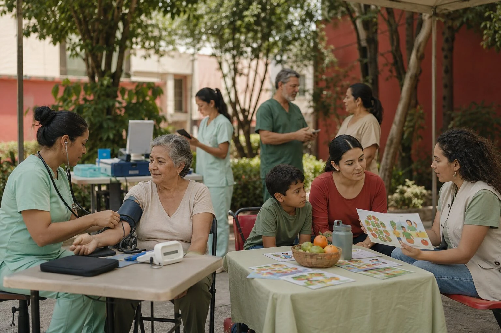
Koruyucu sağlık sahada başlar: ücretsiz tarama, kronik hastalık izlemi, beslenme desteği ve güvenilir sağlık bilgisi mahalle yaşamına yaklaşır.
Ücretsiz sağlık yalnız acil servis kapısının açık olması değildir. İnsan yaşamının farklı evreleri ve farklı bedenler, kesintisiz bir bakım zinciri gerektirir.
| Hizmet alanı | Ortak güvence |
|---|---|
| Koruyucu sağlık | Aşılar, kanıta dayalı taramalar, salgın izlemi, sağlıklı çevre, beslenme ve hareket desteği. |
| Çocuk ve ergen | Büyüme–gelişim izlemi, okul sağlığı, ağız–diş, görme–işitme, ruh sağlığı ve şiddetten korunma. |
| Üreme ve cinsel sağlık | Mahrem danışmanlık, doğum kontrolü, gebelik ve doğum bakımı, güvenli kürtaja yasal çerçevede erişim, CYBE hizmetleri. |
| Akut ve acil bakım | Günün her saati triyaj, ambulans, travma, zehirlenme, cerrahi ve yoğun bakım ağı. |
| Kronik hastalık | Diyabet, kalp–damar, solunum ve nörolojik hastalıklarda ilaç, eğitim, evde izlem ve rehabilitasyon. |
| Ruh sağlığı | Mahalle temelli ekip, psikoterapi, ilaç tedavisi, akran desteği, kriz hattı ve destekli yaşam seçenekleri. |
| Engellilik ve rehabilitasyon | Erişilebilir bakım, yardımcı teknoloji, fiziksel/mesleki rehabilitasyon ve destekli karar verme. |
| Yaşlılık ve palyatif bakım | Evde bakım, bakım veren desteği, ağrı kontrolü, yaşam sonu tercihleri ve yas desteği. |
| Ağız–diş ve görme | Temel hizmet paketinin ayrılmaz parçası; gelir düzeyine göre ertelenen “ekstra” hizmet değil. |
| İş ve çevre sağlığı | Riskin kaynağında önlenmesi, çalışan denetimi, toksik maruziyet izlemi ve iklim sağlığı. |
Her okul ve öğrenme merkezinin mahalle sağlık eviyle doğrudan bağı vardır. Ücretsiz kahvaltı ve öğle yemeği, büyüme izlemi, diş–görme taraması, aşılara erişim, ruh sağlığı desteği ve yaşa uygun cinsel sağlık eğitimi birlikte yürür. Çocuğun sağlık verisi disiplin veya sıralama aracı olamaz; mahremiyet korunur, çocuk ve aile anlaşılır biçimde bilgilendirilir.
Klinik ekip kurulu: günlük iş akışı, bakım sürekliliği, iş güvenliği ve mesleki koordinasyon.
Hasta ve mahalle meclisi: erişim engelleri, hizmet saatleri, dil desteği, bütçe öncelikleri ve deneyim geri bildirimi.
Bölgesel sağlık federasyonu: sevk, hastane kapasitesi, personel dağılımı, ilaç tedariki ve afet planı.
Bağımsız hak ve güvenlik kurulu: hasta güvenliği, ayrımcılık, mahremiyet, çıkar çatışması ve ciddi olay incelemesi.
Her kurulun yetkisi yazılıdır. Klinik tanı çoğunluk oylamasıyla konmaz; kanıta, uzmanlığa ve hastanın değerlerine dayanır. Buna karşılık bütçe ve erişim tercihleri kapalı mesleki odalarda belirlenmez. Uzmanlık kararın niteliğini, katılım ise kurumun meşruiyetini ve hesap verebilirliğini güçlendirir.
Her işlem öncesinde anlaşılır dilde yarar, zarar, seçenek ve belirsizlik açıklanır.
Kişi tedaviyi reddedebilir; karar verme kapasitesi ve acil durumlar için açık hukuki/etik güvenceler bulunur.
Tıbbi kayıt hastanın erişimine açıktır; kişisel veri yalnız bakım için gerekli ölçüde toplanır.
İkinci görüş, bağımsız hasta savunucusu ve karara itiraz ücretsizdir.
Çeviri, işaret dili ve erişilebilir format rızanın önkoşuludur; ek hizmet sayılmaz.
Yoğun bakım yatağı, organ veya nadir ilaç gibi kaynaklar kıt olabilir. Dağıtım servete, tanınırlığa, “toplumsal değer” yargısına ya da engellilik ayrımcılığına bırakılamaz. Önceden yayımlanmış klinik ölçütler, yarar olasılığı, aciliyet, bekleme süresi ve eşitlik ilkeleri birlikte kullanılır; karar birden fazla kişi tarafından verilir ve geriye dönük denetlenir.
ÖZGÜRLÜK VE BILIM Anarşist sağlık, “her görüş eşit derecede doğrudur” demez. Kanıtı, eleştiriye açıklığı ve bağımsız denetimi korur; bilginin statü ve kâr aracına dönüşmesini reddeder. |
|---|
Otorite eleştirisi ile uzmanlık düşmanlığı aynı şey değildir. Cerrahi, anestezi, radyoloji, yoğun bakım, eczacılık ve laboratuvar güvenliği uzun eğitim, ekip disiplini ve sürekli değerlendirme gerektirir. Özyönetim; eğitim standartlarını, ruhsatı, sterilizasyonu veya ilaç denetimini kaldırmaz. Bu standartların şirket çıkarından ve kapalı meslek kastından bağımsız, kamuya açık ve düzeltilebilir olmasını ister.
Kanıta dayalı, düzenli güncellenen ve halka açık klinik rehberler.
Mesleki yeterlik, sürekli eğitim ve açık çıkar çatışması bildirimleri.
Hata bildiriminde cezalandırma korkusunu azaltan; ağır ihmal ve örtbası ise bağımsız inceleyen adil güvenlik kültürü.
Enfeksiyon kontrolü, sterilizasyon, laboratuvar kalite güvence programları ve ilaç yan etki izlemi.
Hasta tarafından bildirilen sonuçlar, erişim eşitsizliği ve çalışan güvenliğinin birlikte ölçülmesi.
Geleneksel veya tamamlayıcı uygulamalarda aynı kanıt, güvenlik, etkileşim ve açık bilgilendirme ölçütü.
Aşılar modern halk sağlığının temel araçlarındandır. Sistem ücretsiz ve yakın erişim, soğuk zincir, şeffaf yan etki izlemi ve güvene dayalı iletişim sağlar. Yanlış bilgiyi küçümseyerek değil, kanıtı anlaşılır biçimde paylaşarak yanıtlar. Salgın önlemleri gerekli, orantılı, süreli, ayrımcılık yaratmayan ve itiraz edilebilir olmalıdır; temel ihtiyaçları karşılamadan karantina ilan etmek adil değildir.
Antibiyotikler ne pazarlama ürünü ne de hastanın talebi karşısında otomatik reçetedir. Hızlı tanı, reçete denetimi, hastane enfeksiyon kontrolü, temiz su, aşılama ve hayvancılıkta sorumlu kullanım tek programda ele alınır. Yeni antibiyotik araştırması kâr beklentisine bırakılamaz; kamusal ve uluslararası ortak fonlarla desteklenir.
Ruhsal sıkıntı yalnız bireysel kimya, yalnız toplumsal baskı veya yalnız “irade” ile açıklanamaz. Biyolojik, psikolojik ve toplumsal etkenler birlikte değerlendirilir. Büyük ve kapalı kurumların yerine toplum temelli bakım güçlendirilir; fakat kurum kapatma, yeterli konut, kriz ekibi, psikoterapi ve destekli yaşam kurulmadan yapılırsa insanları sokağa ve ailelerin omzuna bırakır.
Mahalle merkezinde psikolog, psikiyatri bağlantısı, sosyal destek ve akran danışmanlığı.
Gündüz merkezi, destekli istihdam, barınma ve bağımlılık hizmetleriyle bütünleşme.
Gezici kriz ekibi ve güvenli kriz mekânı; kolluk müdahalesi son seçenek.
İlaç ve psikoterapi seçeneklerinde ortak karar; yarar, yan etki ve bırakma planının açık konuşulması.
Zorlayıcı müdahalenin yalnız yakın ve ciddi riskte, en kısa süreyle, bağımsız denetim ve hukuki temsil altında kullanılması.
Aile ve bakım veren desteği; hastanın mahremiyet ve iradesine saygı.
Üreme sağlığı, ideolojik denetim veya nüfus politikası değil, kişinin özgür kararıdır. Ücretsiz doğum kontrolü, gebelik öncesi bakım, güvenli doğum, lohusalık desteği, infertilite danışmanlığı ve yasal çerçevede güvenli kürtaj hizmetleri sunulur. Cinsiyet kimliği ve cinsel yönelim ayrımcılık nedeni olamaz. Şiddet ve istismar başvurularında güvenli, gizli ve travma bilgili hizmet gerekir.
Engelli kişinin yaşamı dışarıdan değersizleştirilemez; sağlık sistemi yalnız “düzeltme” amacıyla yaklaşamaz. Binalar, iletişim, cihazlar ve randevu süreçleri evrensel tasarımla kurulur. Aynı kalite hizmet, ücretsiz yardımcı teknoloji, rehabilitasyon ve toplum içinde yaşam desteği sağlanır. Destekli karar verme kişinin yerine karar vermek değil, kendi kararını kurabilmesi için gerekli iletişim ve zamanı sağlamaktır.
Dünya Sağlık Örgütü’nün temel ilaç yaklaşımı, öncelikli sağlık ihtiyaçları için etkili, güvenli ve ulaşılabilir ürünleri öne çıkarır. Bu proje yaşamsal ilacı sıradan meta olarak görmez. Araştırma, üretim, ruhsatlandırma, satın alma ve dağıtım kamusal yarar zinciri içinde yeniden kurulur.
Temel ilaçlar ve tıbbi ürünler için kâr amacı gütmeyen üretim kapasitesi ve bölgesel stok.
Toplu satın alma, şeffaf maliyet, jenerik/biyobenzer kullanım ve uygun olduğunda patent esneklikleri.
Kamu fonlu araştırmada açık bilim, sonuçların yayımlanması ve erişilebilir lisans koşulları.
Ruhsatlandırma ve kalite laboratuvarının üreticiden, klinikten ve siyasi baskıdan bağımsızlığı.
Farmakovijilans, geri çağırma, sahte ürün önleme ve soğuk zincir için izlenebilir tedarik.
Nadir hastalıklarda bölgeler arası dayanışma ve ortak araştırma fonu.
Bir cihazın pahalı veya yapay zekâ içermesi onu otomatik olarak iyi kılmaz. Sağlık teknolojisi değerlendirmesi; klinik yarar, zarar, erişilebilirlik, bakım maliyeti, çevresel etki ve fırsat maliyetini birlikte inceler. Algoritmalar tanı ve planlamayı destekleyebilir; yüksek etkili nihai kararlar insan sorumluluğunda kalır. Eğitim verisindeki önyargı ve performans farklılıkları gruplara göre açıklanır.
Toplum salgın, çevre ve hizmet eşitsizliğini görebilmek için toplu veriye ihtiyaç duyar; bu, kişisel kaydın herkese açık olması demek değildir. Kişi tanımlayıcı veri en aza indirilir, şifrelenir ve süre sınırıyla saklanır. Ticari satış ve reklam profili yasaktır. Araştırma erişimi etik inceleme, topluluk katılımı ve yeniden tanımlama riskine karşı korumayla yürütülür.
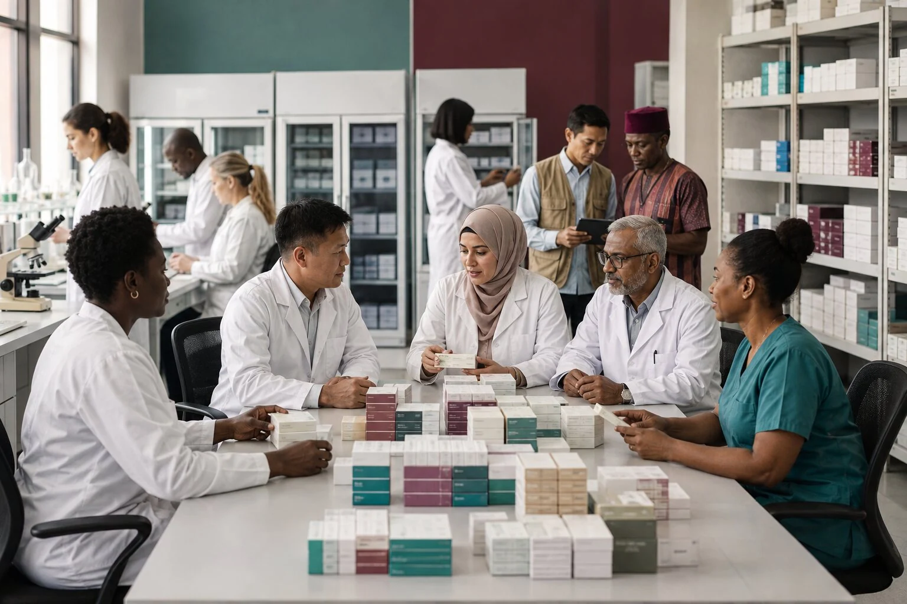
İlaç ve laboratuvar müşterekleri: açık bilim, bağımsız kalite denetimi, ortak tedarik ve ihtiyaç temelli dağıtım.
Bakımın ücretsiz olması, bakım emeğinin ücretsiz olması anlamına gelemez. Sağlık çalışanlarının güvenli çalışma, yeterli ücret, dinlenme, örgütlenme ve mesleki itiraz hakkı hasta güvenliğinin koşuludur. Tükenmiş bir ekip, özgür bir kurum yaratamaz.
Güvenli personel oranları, vardiya üst sınırı ve zorunlu dinlenme süreleri.
Şiddeti önleyen mekân, ekip ve hukuki destek; çalışanı yalnız bırakan “sıfır tolerans” sloganı değil.
Tüm mesleklerin kurul ve bütçe kararlarında temsili; bakım ve temizlik emeğinin görünür değeri.
Hekimin klinik bağımsızlığı, hastanın rızası ve ekip bilgisini gözeten ortak karar süreçleri.
Sürekli eğitim, ücretli öğrenme zamanı, kırsal bölgelere gönüllü ve güçlü destekli dağılım.
Vicdani/mesleki itirazın hastanın hizmet hakkını engellemeyecek nöbet ve sevk düzeniyle sınırlandırılması.
İş kazasını “dikkatsizlik” olarak bireyselleştirmek yerine tehlike kaynağında yok edilir. Çalışanların üretimi durdurma, bağımsız ölçüm isteme ve sağlık kayıtlarına erişme hakkı vardır. İşyeri sağlık birimi işverene bağımlı olamaz. Maruziyet verileri toplu biçimde açıklanır; kişisel mahremiyet korunur. Meslek hastalığının tedavisi kadar işin yeniden tasarımı da sağlık programıdır.
Hava, su, toprak, gürültü ve sıcaklık sağlık göstergeleri mahalle düzeyinde izlenir. Kirleten üretim kararında etkilenen topluluk ve çalışanlar söz sahibidir. İklim krizinde serinleme merkezleri, erken uyarı, dayanıklı enerji, ilaç soğuk zinciri ve kırılgan kişilere aktif ulaşım planlanır. Hastane atığı, enerji tüketimi ve ilaç kirliliği de sağlık sisteminin sorumluluğudur.
Yüksek maliyetli sağlık hizmeti yalnız gönüllü bağışlarla sürdürülemez. Bu nedenle finansman, toplumsal üretimden kapasiteye göre ayrılan evrensel sağlık payı ile bölgesel ve geniş ölçekli dayanışma havuzlarına dayanır. Katkı kapasiteye, hizmet ihtiyaca göredir. Kullanım anında ücret, katkı payı veya borç çıkarılmaz.
Evrensellik: gelir veya hastalık kanıtı üzerinden damgalayıcı yardım sınavı yoktur.
Risk paylaşımı: pahalı kanser tedavisi, yoğun bakım ve nadir hastalık tek mahallenin bütçesine bırakılamaz.
İhtiyaca göre eşitleme: yaş, yoksunluk, engellilik, coğrafya ve hastalık yükü ek kaynak getirir.
Kâr dağıtımı yok: bütçe bakım, çalışan, araştırma, bakım-onarım ve stok için kullanılır.
Katılımcı bütçe: büyük yatırım öncelikleri anlaşılır verilerle topluluk ve çalışan kurullarında görüşülür.
Yolsuzluk denetimi: açık ihale, çıkar çatışması kaydı, bağımsız hesap incelemesi ve ihbarcı koruması.
Afet, yalnız yerel gönüllülükle veya yalnız uzak merkezle yönetilemez. Mahalle ekipleri kırılgan kişileri ve yerel ihtiyaçları bilir; bölgesel merkezler yoğun bakım, laboratuvar, lojistik ve stok kapasitesini koordine eder. Önceden belirlenmiş acil görevler, birlikte tatbikat, yedek enerji, kan/ilaç stoku, güvenli iletişim ve karşılıklı yardım anlaşmaları kurulur.
Bulaşıcı hastalıkta bir kişinin eylemi başkalarının yaşamını etkileyebilir. Önlemler bilimsel gereklilik, en az kısıtlayıcı yöntem, zaman sınırı, düzenli gözden geçirme, temel ihtiyaç güvencesi ve ayrımcılık yasağına bağlıdır. Kararlar ve dayandıkları veriler yayımlanır. Karantina altındaki kişiye gelir, gıda, ilaç ve bakım sağlamadan sorumluluk yüklenemez.
Dönüşüm, mevcut hastaneleri bir gecede dağıtmak değil; hizmeti kesintiye uğratmadan mülkiyet, finansman ve karar yapısını aşamalı olarak değiştirmektir.
1. Sağlık ve erişim haritası: Hastalık yükü, bekleme, personel, engellilik, ulaşım, dil ve çevresel riskleri mahalle düzeyinde belirlemek.
2. Evrensel ücretsiz paket: Birinci basamak, ilaç, ruh sağlığı, diş, üreme, rehabilitasyon ve acil bakımı kapıda ücret olmadan güvenceye almak.
3. Mahalle sağlık evleri: Mevcut merkezleri disiplinlerarası, engelsiz ve uzun saat açık ekiplere dönüştürmek; evde/gezici hizmet eklemek.
4. Çalışan ve hasta kurulları: Yetkileri, görev süreleri, geri çağırma ve çıkar çatışması kuralları açık ortak yönetim yapıları kurmak.
5. Bölgesel eşitleme: Personel, ambulans, laboratuvar, yatak ve ileri bakım kapasitesini ihtiyaca göre paylaşan federasyon oluşturmak.
6. İlaç müşterekleri: Toplu alım, jenerik üretim, açık araştırma, kalite laboratuvarı ve stratejik stok kurmak.
7. Hak ve güvenlik güvencesi: Bağımsız hasta savunucusu, olay incelemesi, veri koruma ve çalışan güvenliği mekanizmalarını işletmek.
8. Açık değerlendirme: Sonuçları eşitsizlik gruplarına göre yayımlamak; başarısız pilotu saklamadan düzeltmek ve ölçeklendirmek.
| Ölçüm alanı | Örnek göstergeler |
|---|---|
| Erişim | Bekleme süresi, seyahat süresi, ücretsiz ilaç erişimi, dil/engellilik desteği. |
| Eşitlik | Gelir, bölge, cinsiyet, engellilik ve yaş grupları arasındaki önlenebilir sonuç farkları. |
| Sağlık sonucu | Aşılanma, kontrol edilen kronik hastalık, anne–çocuk sağlığı, önlenebilir yatış ve ölüm. |
| Deneyim ve hak | Rıza kalitesi, mahremiyet ihlali, ayrımcılık başvurusu, güven ve ortak karara katılım. |
| Emek | Tükenmişlik, iş kazası, vardiya, personel devri, eğitim zamanı ve ekip içi adalet. |
| Dayanıklılık | Stok günleri, afet tatbikatı, laboratuvar süresi, sevk başarısı ve enerji yedeği. |
Klinik sorumluluk kaybolmaz. Eğitimli ekip, kanıta dayalı protokol ve açık görev dağılımı vardır. Anarşist eleştiri, acil durumda uzman kararını değil; bu uzmanlığın ayrıcalık, keyfilik ve hesap vermezliğe dönüşmesini hedef alır. Cerrah ameliyatı yönetir; hasta rıza verir; ekip güvenlik kontrolüne katılır; kurum sonucu denetler.
Gereksiz kullanımın asıl yanıtı kapıda mali ceza değil, güçlü birinci basamak, sağlık okuryazarlığı, doğru yönlendirme ve sürekliliktir. Ücret, yoksulu gerekli bakımdan da uzaklaştırır. Kaynak kötüye kullanımı klinik rehber, kayıt analizi ve etik denetimle azaltılır; hasta gelirine göre cezalandırılmaz.
Meclis hangi antibiyotiğin hangi bakteriye etkili olduğuna karar vermez. Hizmet saatleri, erişim, bütçe ve deneyim gibi kamusal konuları belirler. Bilimsel standartlar bağımsız kurullarca, açık kanıtla ve mesleki sorumlulukla korunur. Yetki sınırları yazılı olmazsa katılım popülizme dönüşebilir; bu nedenle sınır tasarımın parçasıdır.
Doğru; bu yüzden model yalnız yerel değildir, federatiftir. Mahalle birinci basamağı yakınlaştırır; pahalı teknoloji, nadir uzmanlık ve araştırma geniş bölgeler arasında paylaşılır. Özerklik izolasyon değil, farklı ölçeklerde eşgüdümlü karşılıklılıktır.
Özgürlük başkasının yaşamını yok sayma hakkı değildir. Kanıta dayalı ve orantılı önlem mümkündür; ancak karar şeffaf, süreli, denetlenebilir ve maddi destekle birlikte olmalıdır. Güven zorla değil, doğru bilgi, ücretsiz erişim ve tutarlı kurumlarla büyür.
Bu proje tam tersini savunur. Komşuluk desteği yemek, ulaşım, refakat ve bilgi paylaşımını güçlendirebilir; profesyonel tanı, bakım ve tedavinin yerini alamaz. Sağlık emekçisi ücretli, güvenceli ve yeterli kadroyla çalışır.
Anarşizmin sağlık sorununa güçlü cevabı, hastaneyi reddetmek veya tıbbi uzmanlığı sıradanlaştırmak değildir. Cevap; yaşamı koruyan bilgiyi kârın, sınıfın ve kapalı iktidarın elinden çıkarıp herkesin erişebildiği, denetleyebildiği ve katkı sunabildiği bir müşterek hâline getirmektir.
Özgür Sağlık Müşterekleri’nde mahalle sağlık evi kişiye yakındır; bölgesel hastane karmaşık bakımı güvenle yürütür; ilaç ve laboratuvar ağı açık bilim ve bağımsız kaliteyle çalışır. Hastanın sözü duyulur, çalışanın emeği korunur, uzmanlık hesap verir. Çocuk sağlığı okul sofrasından, solunum sağlığı temiz havadan, ruh sağlığı güvenli konut ve toplumsal bağdan ayrı düşünülmez.
Bu proje kusursuz toplum vaadi değildir. Kıtlığın, hatanın, çıkar çatışmasının ve yeni hiyerarşilerin her kurumda doğabileceğini kabul eder. Bu yüzden geri çağrılabilir görevler, açık bütçeler, bağımsız güvenlik incelemesi, veri mahremiyeti ve sürekli bilimsel değerlendirme önerir. Özgürlük, denetimsizlik değil; gücün görünür, sınırlı ve düzeltilebilir olmasıdır.
MANIFESTO Hiç kimse tedavi olmak için borçlanmayacak. Hiçbir çocuk yoksulluk yüzünden sağlıksız büyümeyecek. Hiçbir sağlık emekçisi dayanışma adına tüketilmeyecek. Bilim, bakım ve yaşam hepimizin ortak güvencesi olacaktır. |
|---|
Tarihsel kaynaklar dönemlerinin dilini ve koşullarını taşır. Aşağıdaki seçki, düşünsel bağlantıları ve çağdaş sağlık güvencelerini izlemek içindir; proje ayrıntıları yazara ait güncel bir sentezdir.
Pyotr Kropotkin — Mutual Aid: A Factor of Evolution — Karşılıklı yardımlaşmanın toplumsal ve evrimsel rolü. Kaynağa git
Sam Dolgoff (ed.) — The Anarchist Collectives — Gaston Leval’in İspanya’da sağlık hizmetlerinin toplumsallaştırılmasına ilişkin tarihsel anlatımı. Kaynağa git
Health professionals and the libertarian movement during the Spanish Civil War — CNT sağlık kongresi ve mesleki örgütlenme üzerine akademik tarih çalışması. Kaynağa git
Emma Goldman — The Social Aspects of Birth Control — Üreme özerkliği tartışmasının tarihsel metni. Kaynağa git
Murray Bookchin — Our Synthetic Environment — Çevre, toplum ve sağlık arasındaki bağlar. Kaynağa git
Murray Bookchin — Society and Ecology — Toplumsal tahakküm ve ekolojik krizin ilişkisi. Kaynağa git
Colin Ward / Tony Parker / Jane Ferrie — Health and Welfare — Özerk sağlık ve refah girişimleri üzerine tartışma. Kaynağa git
Dean Spade — Mutual Aid — İhtiyaç karşılama ile kolektif kapasite kurma ilişkisi. Kaynağa git
Alondra Nelson — The Black Panther Party and the Fight against Medical Discrimination — Ücretsiz klinikler ve koruyucu sağlık programları üzerine hakemli inceleme. Kaynağa git
Common Ground Health Clinic — Katrina sonrasında dayanışma temelli toplum kliniği. Kaynağa git
Dünya Sağlık Örgütü — Alma-Ata Bildirgesi — Evrensel, bilimsel ve toplum katılımlı birinci basamak ilkeleri. Kaynağa git
Dünya Sağlık Örgütü — Primary Health Care — Koruma, tedavi, rehabilitasyon ve palyatif bakımı bütünleştiren yaklaşım. Kaynağa git
OHCHR — The Right to Health — Bulunabilirlik, erişilebilirlik, kabul edilebilirlik, kalite ve katılım çerçevesi. Kaynağa git
WHO — Human Rights and Health — Beden üzerinde denetim, rıza ve sağlığın toplumsal belirleyicileri. Kaynağa git
BM Engelli Hakları Sözleşmesi, Madde 25 — Aynı kalitede sağlık ve özgür/bilgilendirilmiş rıza. Kaynağa git
WHO — Guidance on Community Mental Health Services — Hak temelli ve toplum odaklı ruh sağlığı hizmetleri. Kaynağa git
WHO — Access to Medicines and Health Products — Güvenli, etkili, kaliteli ve karşılanabilir ürünlere erişim. Kaynağa git
WHO — Guideline on Health Policy and System Support for Community Health Workers — Toplum sağlığı çalışanlarında eğitim, ücret, gözetim ve sistem desteği. Kaynağa git
WHO — Antimicrobial Resistance — Direncin nedenleri ve bütüncül halk sağlığı yanıtı. Kaynağa git
ILO — Safety and Health at Work — Güvenli ve sağlıklı çalışma hakkı. Kaynağa git
Sağlık kaynaklarının özel kâr veya kapalı bürokratik tekel yerine, evrensel hak çerçevesinde toplum ve emekçilerce birlikte yönetilmesi.
Hayırseverlikteki veren–alan hiyerarşisi yerine, herkesin ihtiyaç duyabileceğini ve kapasitesi ölçüsünde katkı sunabileceğini kabul eden dayanışma.
Yerel kurumların özerkliğini korurken sevk, uzman, hastane, ilaç ve afet kapasitesini geri çağrılabilir delegeler ve açık görevlerle birlikte koordine etmesi.
Kişinin seçenekler, yararlar, zararlar ve belirsizlikler hakkında anlaşılır bilgi aldıktan sonra baskı olmadan karar vermesi.
Konut, gıda, gelir, çalışma, eğitim, çevre, ayrımcılık ve toplumsal bağlar gibi sağlık sonuçlarını klinik bakımın ötesinde biçimlendiren koşullar.
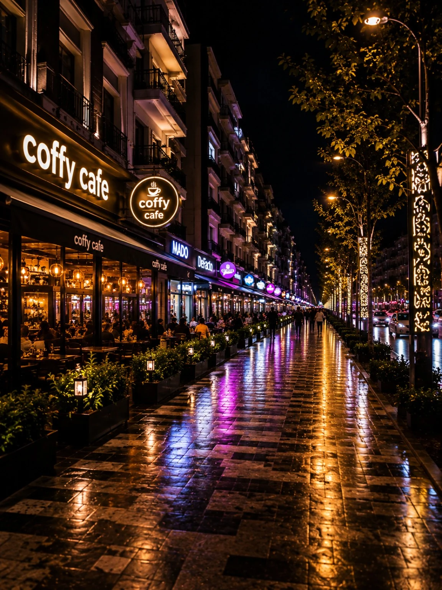
Şehrin ışıkları, Coffy’nin sıcak atmosferi ve güzel bir çayın eşliğinde sakin, keyifli bir akşam.
Oku →Anarşizm, Doğa ve Ekoloji — tam metin ve görseller
Doktorluk ve Hekimlik — tam metin ve görseller
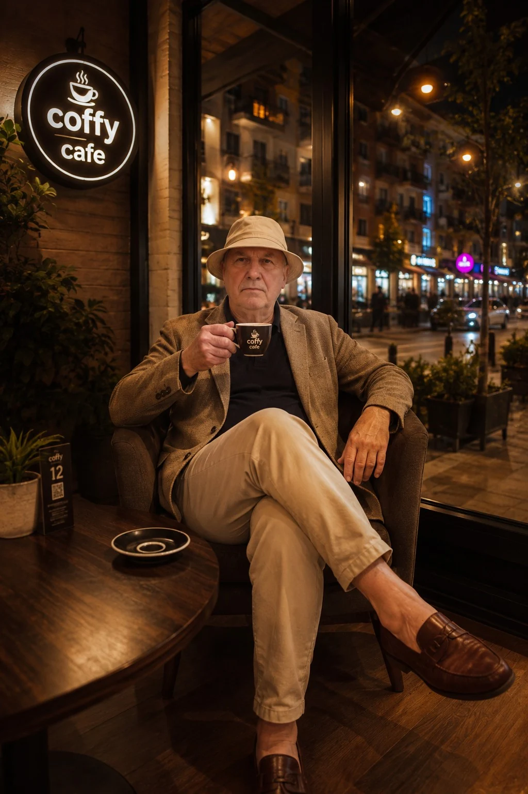
Gündüzün telaşı yavaş yavaş geride kalırken Narin Caddesi başka bir kimliğe bürünüyor. Dükkânların ışıkları yanıyor, kafelerin masaları dolmaya başlıyor, insanlar günün yorgunluğunu birkaç saatliğine geride bırakıyor. Cadde artık yalnızca bir yerden başka bir yere ulaşmak için kullanılan bir yol değil; şehrin akşam hayatının küçük bir sahnesi oluyor.
Bu akşam ben de Coffy’de güzel bir çayın eşliğinde tam olarak bunu yaptım. Önümde cadde, çevremde insanların konuşmaları, uzakta araçların ışıkları… Bazen hiçbir yere yetişmek zorunda olmadan oturmak ve şehri izlemek insana beklenmedik bir huzur veriyor. Bir insan geçiyor; ardından başka biri. Bir masa boşalıyor, başka bir masa doluyor. Küçücük olaylar birbirine eklenerek şehrin hikâyesini oluşturuyor.
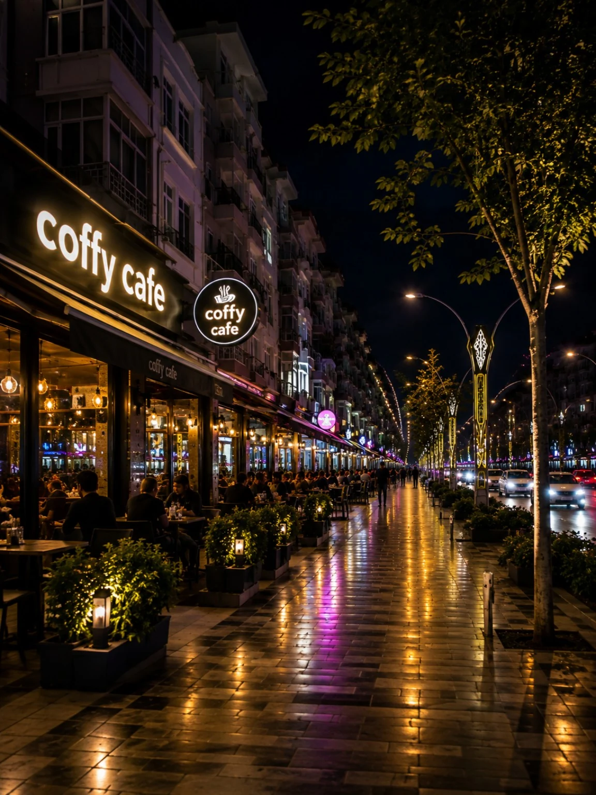
Narin Caddesi gece olduğunda ışıklarıyla daha sıcak, daha canlı ve biraz da romantik görünüyor. Özellikle kafelerin aydınlatmaları caddeye ayrı bir hava katıyor. Coffy’nin ışıklı tabelası, içeriden dışarıya yayılan sıcak ışık ve önünden geçen insanların oluşturduğu hareketlilik, modern şehir yaşamının hoş bir görüntüsünü ortaya çıkarıyor.
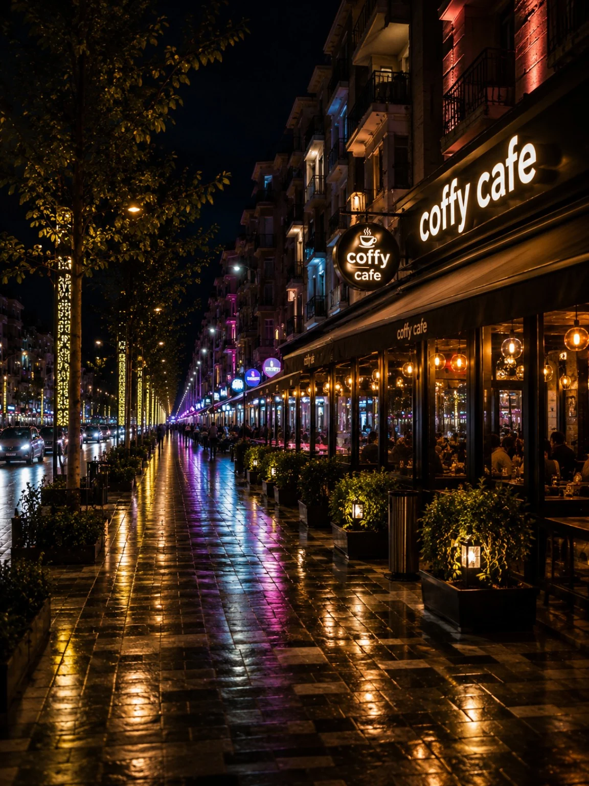
Hayatı çoğu zaman büyük olaylarla ölçmeye alışıyoruz. Oysa yaşamın büyük bölümü sıradan sandığımız akşamlardan, içtiğimiz bir bardak çaydan, sevdiğimiz bir müzikten, güzel bir caddede yürümekten ve birkaç dakika boyunca hiçbir şey düşünmeden çevremizi seyretmekten oluşuyor. Belki de mutluluk dediğimiz şey tam burada saklı.
Hayat yalnızca gidilecek yerlerden ibaret değildir. Bazen durduğumuz yerde gördüklerimiz de yolculuğun kendisidir.